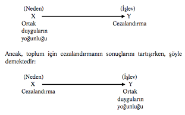
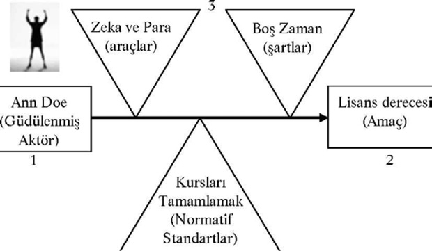
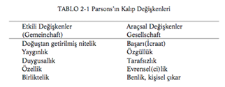
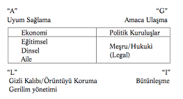
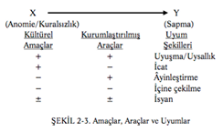

BÖLÜM 2 - İŞLEVSELCİLİK
Giriş
Yıllarca, günümüz sosyoloji kuramları arasında üstün bir yer tutmuş olduğundan ve karşısına meydan okumak üzere çıkan başka bakış açıları bulunduğundan, tartışmamıza işlevselcilik ile başlayacağız. Genel olarak, Birleşik Devletler’de sosyoloji öğrencilerinin modern kuram konusunda okumaları gerekenlerin büyük bir kısmını, Talcott Parsons ile Robert Merton’ın eserleri teşkil etmektedir. Hattâ, bazı sosyologlar, sosyolojik çözümleme ile, işlevsel çözümlemeyi bir tutma noktasına gelmişlerdir. Kingsley Davis’in Amerikan Sosyoloji Derneği’nde 1959 yılında, “Sosyoloji ve Antropolojide Özel Bir Yöntem Olarak İşlevselci Çözümleme Efsanesi” başlığı altında yapmış olduğu başkanlık konuşmasında öne sürülen husus da bu idi.32
32 Kingsley Davis, “Sosyoloji ve Antropoloji’de Özel Bir Yöntem Olarak İşlevselci Çözümleme Efsanesi” American Sociological Review 24 (1959): 757-72.
Davis’e göre, sosyoloji, 1) Bir kurumun veya davranış şeklinin, toplumda oynadığı rolü veya işlevini ve diğer toplumsal özelliklerle olan ilişkisini incelemek ve 2) bunu, esas olarak “toplumsal” açıdan açıklamak demektir.33 Davis’e göre, bu da işlevselci çözümlemenin esasıdır. Ancak, tartışma devam etmektedir, çünkü işlevselcilik şemsiyesi altında durmak istemeyen ve sosyolojinin yapısı veya işlevselci-liğin tanımı üzerinde Davis’in görüşlerine katılmayan birçok sosyolog vardır: bu bilime (discipline), işlevselci yaftasını yapıştırma çabasına karşı çıkmaktadırlar. Zaten ilerideki bölümlerde, kendilerini işlevselci yaklaşımlar olarak tanımlayan veya buna karşı olan farklı yaklaşımlar göreceğiz.
33 Davis’in bu iddialarını, yeterli bir sosyolojik açıklamanın, nihai olarak psikolojik açıklama olması gerektiğini ileri süren George Homans’ın alışveriş kuramı ile karşılaştırmak ilginç olmaktadır. Bölüm 4’de George Ho-mans’ın “psikolojik indirgeyicilik” ile ilgili görüşlerine bakınız.
2Bu bakış açısına çok zaman “yapısal işlevselcilik” adının verilmesine sebep, bir toplumsal sistemin ayakta kalabilmesi için, karşılanması gereken işlevsel zorunluluklar veya “gereksinmeler” (needs) ile, bu gereksinmeleri karşılama durumunda olan yapılar üzerinde odaklanmış olmasıdır. Bu görüşe göre, toplumsal sistemler, varlıklarını sürdürebilmek için, bazı işleri yapmak eğilimindedirler ve dolayısıyla sosyolojik çözümleme, bu işleri yapacak veya bu “gereksinmelere” cevap verecek toplumsal yapıları aramak durumundadır. Yıllar geçtikçe, Talcott Parsons ve Robert K. Merton’dan, bu yaklaşımın iki kuramcısından, yapısal işlevselciler olarak bahsedilmeye devam edilmiştir. Biz, bu bakış açısına işlevselcilik adını, şu iki sebeple veriyoruz: Birincisi, kendilerinden önce gelen özellikle Durkheim gibi kişilerin işlevselciliği ile bağlantıya açıklık getirmektedir. İkincisi, her iki büyük kuramcımızın da işlevselcilik terimini tercih etmeleridir. Mer-ton, işlevselci çözümleme terimini yıllar boyunca aynı anlamda kullanmıştır. Parsons işlev, yapı ve süreç kavramlarını yeniden gözden geçirdikten sonra yapısal işlevselcilik terimini terk etmiştir.34
34 Talcott Parsons, “The Present Status of Structural - Functional Theory in Sociology”, Lewis A. Coser, The Idea of Social Structure Papers in Honor of Robert K. Merton (NewYork: Harcourt Brace Javanovich, 1975) s. 67, Parsons burada, “tırnak içine alınmış olan ‘yapısal işlevselcilik’ başlığı bana gittikçe daha uygun gelmiştir” demektedir.
İşlevselciliğin Tanımı
İşlevselcilik nedir, sorusuna cevap olarak, işlevselciliği şöyle tanımlayan Bir Modern Sosyoloji Sözlüğüne bakıyoruz:
Toplumsal ve kültürel olguların toplumsal-kültürel sistem içerisinde yerine getirdiği işlevlerin çözümlenmesi. İşlevselcilikte toplum, hiçbir kısmının bütünden ayrı olarak anlaşılamayacağı ve birbirleri ile ilişkili kısımlardan oluşan bir sistemdir. Bu görüşe göre: Herhangi bir kısımdaki değişim, sistemin diğer kısımlarında bir miktar dengesizliğe ve bir ölçüde de bir bütün olarak sistemin yeniden düzenlenmesine yol açar. İşlevselcilik, biyoloji bilimlerindeki organik sistem modeline dayalı olarak geliştirilmiştir.35
35 George A. Theodorson and Achilles S. Theodorson, A Modern Dictionary of Sociology (New York: Thomas Y. Crowell Co., 1969) s. 167.
Toplumsal yapının bütün özellikleri ve toplumsal kurumların genel doğası ile ilgilendiği için, işlevselcilik makrososyolojide odaklanmıştır. İşlevselcilerin, “bir toplumsal sistemin birbirleri ile ilişkili kısımları” ifadesi, bir havaalanına bakılarak anlaşılabilir. Burada kısımlar, uçak biletleri ve rezervasyon personeli, bakım grubu, pilotlar, hostesler, yolcular, denetim kulesi personeli, restoran işçileri, yük taşıyıcılar ve benzerleridir. Bütün bu kısımlar birbirleri ile ilişkilidir ve bunların birbirlerine karşılıklı olarak dayalı olduğunu anlamak için, birinde bir tedirginliğin olduğunu düşünmek yeterlidir. Hava alanının bir sistem olarak dengesizliğine yol açacak -kötü hava şartları dolayısıyla pistlerin kapanması, radar denetim sisteminin kötü çalışması, bayram ve tatil günlerinde (Noel veya Şükran günü) yolcu sıkışıklığı gibi- birçok değişiklikler olabilir. Bu tedirginliklerden herhangi biri, çok zaman, sistemin geçici olarak işlemez hâle gelmesi noktasına kadar “bir ölçüde dengesizlik” sonucunu doğurabilir.
Toplumsal sistemlerin bu yol ile çözümlenmesinde, işlevselciler üç öge üzerinde durmaktadırlar:
1- Sistemin kısımlarının birbirleri ile ilişkili ve birbirlerine bağlı olması;
2- Toplamsal sistemde bir organizmanın normal veya sağlıklı durumuna benzer, “normal” veya denge hâlinde bir durumun mevcut olması;
3- Sistemin bütün kısımlarının, normal hâle dönmek için yeniden düzenlenmesi.
İşlevselcilerin en önemli önermelerinden biri, daima böyle bir yeniden düzenleme ve dengeyi yeniden sağlama eğiliminin olacağıdır. Havaalanı örneğinde, “normal” şartları tanımlamak ve bu şartları sağlamak için sistemin nasıl organize olduğunu görmek kolaydır; personel daha çok çalışacak, fazla mesai düzenlenecek, ek görevli alınacaktır. Ancak, başka durumlarda göreceğimiz gibi bu daha zor olabilir.
Toplumsal sistemlerin dengeyi nasıl koruduğunu ve nasıl yeniden denge kurduğunu çözümlerken, işlevselciler ana kavram olarak paylaşılmakta olan değerleri veya arzu edilenler ile ilgili, genel olarak kabul edilen standartları kullanma eğilimindedirler.36 Değerler ile ilgili görüş birliği (consensus), bireylerin bulundukları topluma ah-lâksal olarak bağlı olmaları anlamındadır. Değerlere önem verme, işlevselciliğin en belirgin ikinci özelliğidir. Bu bakımdan, diğer başlıca makro-sosyolojik bakış açısı olan çatışma kuramı ile doğrudan ters düşmektedir. İşlevselcilik, toplumun birliğine ve üyelerinin paylaşmakta oldukları hususlara ağırlık verirken, çatışma kuramcıları toplum içindeki bölünme ve insanların farklı maddî çıkarları ardınca koşmaktan ileri gelen mücadeleleri üzerinde durur.37
36 İşlevselcilerin değerler ile ilgili tanımları için, bu kitap, s.52-53’e bakınız.
37 Bölüm 3’e bakınız.
Entelektüel Kökler: Emile Durkheim ve Selefleri
Modern işlevselcilerin en önemli entelektüel ataları Auguste Comte, Herbert Spencer, Vilfredo Pareto ve Emile Durkheim gibi sosyologlardır. Comte, Spencer ve Pareto toplumsal sistemin kısımlarının karşılıklı bağımlılığı (interdependence) üzerinde; Durkheim, bütünleşme (integration) veya dayanışma (solidarity) üzerinde durmuşlardır.
5Herkes tarafından sosyolojinin kurucusu olarak kabul edilen Au-guste Comte (1798-1857), toplumsal dengenin temelleri ile ilgili genel araştırmalarının sonucu, bir toplumdaki “statikler” (düzen) ve “dinamikler” (ilerleme) ile ilgilenmiştir. Comte, “statik sosyoloji incelemesi, toplumsal sistemin farklı kısımlarının eylem ve tepki yasalarının araştırılmasından ibarettir” derken; işlevselciliğin, toplumsal sistemin parçaları arasında karşılıklı bağımlılık bulunduğu temel kabulünü ifade etmiştir.38 Comte, toplumsal sistemin bütünü ile parçaları arasında uyumsuzluğun “patolojik” olduğunu belirtirken de, işlevsel denge kavramı ortaya çıkmaktadır. Denge kavramı, biyolojinin homeostasis yaklaşımından alınmıştır; örneğin, düşüp dizinizi yaraladığınızda vücudunuzun diğer kısımlarının yardıma gelmesi ile bir kabuk bağlanacağını; ve kısa zamanda yaranın iyileşerek vücut sisteminizin yeniden dengeye kavuşacağını bilirsiniz. Comte’un çalışmaları, toplumsal ve biyolojik organizmalar arasında buna benzer karşılaştırmalarla doludur.
38 Auguste Comte, “The Positive Philosophy, trans. Harriet Martineau (Lon-don: Bell, 1896), vol. II.
Herbert Spencer’ın (1820-1903) adı da, farklılaşma kavramı dolayısıyla, işlevselciliğin bir önderi olarak belirtilmelidir. Spencer farklılaşmadan, sistemin farklı kısımları arasında, toplumların büyümesi dolayısıyla kaçınılmaz olarak ortaya çıkan karşılıklı bağımlılık (ba-ğınlaşma) hâlini kastetmiştir.39 Modern işlevselciler bunun gibi, farklılaşmayı, toplumsal sistemin parçalarının birbirleri ile ilişkili olmasının ve bütünleşmenin önemli bir yönü olarak kabul etmektedirler. Spencer’ın evrimci kuramı, Durkheim’ın daha sonraları Toplumda Iş Bölümü’nde ifade edilmiş olan kuramına (modern işlevselcileri büyük ölçüde etkilemiş olan bir kuram) genel olarak benzemektedir. Ancak, aralarında iki önemli fark vardır. Birincisi, Durkheim, Spen-cer gibi, toplumsal farklılaşmanın gerekli olduğu üzerinde ısrar etmemiştir. İkincisi, Durkheim’ın, sosyolojinin esas konusunun toplumsal gerçekler (social facts) olduğu üzerindeki ısrarı, Spencer’ın toplumsal ilerlemenin sebebinin psikolojik olduğu, yani, tayin edici etkenin, bireyin daha çok mutluluğa gereksinmesi olduğu indirgeyici tutumuna doğrudan doğruya ters düşmektedir. Bu bakımlardan iş-levselcilik, Durkheim’ı takip etmektedir. Buna rağmen, Parsons kendisinin toplumsal değişme kuramında Spencer’ın toplumsal farklılaşma kavramını kullanmıştır.
39 Herbert Spencer, The Principles of Sociology (New York: Appleton, 1896).
Vilfredo Pareto (1848-1923) kendi sosyoloji sistemini, biyolojik bir organizmaya benzetme yerine, kısımlar arasında karşılıklı bağımlılık ve düzeltici değişiklikler gibi özelliklere sahip bir psiko-kimyasal sisteme dayandırmıştır. Pareto’ya göre, toplumsal sistemin “molekülleri”, çıkarları, dürtüleri ve duyguları olan bireylerdir. Pareto, kısımları arasında karşılıklı ilişkiler ve bağımlılıklar olan bir toplumsal sistemin açık ve belirgin bir tanımını yapan ilk sosyologdur. Parsons daha sonraları, sistemlerin bir yandan dengelerini korurken, öte yandan nasıl uyum sağladıklarını ve değiştiklerini açıklarken, Pareto’nun sistemde uyum sağlayan dinamik veya “hareket hâlinde olan” denge fikrini kullanmıştır.
Emile Durkheim
Emile Durkheim (1858-1917), hiç şüphesiz, çağdaş işlevselciliğin en önemli önderidir. Talcott Parsons, kendisinin en önemli entelektüel rol modellerinden birinin Durkheim olduğunu söylemiştir.40 Bunun gibi, Robert Merton, öğrencisi olduğu kişilerin yanı sıra, en fazla şey öğrenmiş olduğu iki kişiden birinin Durkheim olduğunu ifade eder.41
40 Talcott Persons, “On Building Social Sytem Theory: A Personal History”, Daedalus (Fail 1970): 873.
41 Coser, The Idea of Social Structure’a bakınız. (s. 96).
Ancak, Durkheim’ın kuramsal etkileri işlevselciliğin ötesine geçmektedir. Erving Goffman ile Peter Berger da kendi simgesel etkile-şimci ve fenomenolojist görüşlerine Durkheim’ın bazı fikirlerini katmışlardır. Bir çatışma kuramcısı olan Randall Collins çalışmalarında âyin (dinsel tören) konusunda Durkheim’ın fikirlerini kullanmıştır.42
42 Bölüm 3, 5 ve 6’ya bakınız.
Emile Durkheim Fransa’da Epinal, Lorraine’de doğmuştur. Babası, büyük babası ve büyük büyük babası hahamdı; o da, bir süre bir haham okulunda okumuş olmakla beraber onların adımlarını takip etmemeye karar vermiştir.43 Ailenin içinde bulunduğu mali güçlükler ve babasının hastalığı, Durkheim’ın kolej öğrencisi olarak ilk zamanlarını güçleştirmiştir, ama Ecole Normale Superieure’den mezun olmuş, felsefe ve toplumsal bilim konularında birçok yayımlarından dolayı, 1887’de Bordeaux Üniversitesi’nde ders vermek üzere davet edilmiştir. 1902’de Paris Üniversitesi’ne geçerek, ölümüne kadar orada kalmıştır.
43 Steven Lukes, Emile Durkheim: His Life and Work (New York: Harper and Row, 1972)’a bakınız.
Durkheim öğretimi kutsal bir görev olarak görmüştür; derslerine devam eden öğrencilerinden birçoğu Fransa’nın müstakbel öğretmenleri olacaklardır. Öğretim ve araştırmalarının yanı sıra, Durk-heim, ufak bir meslekdaşlar topluluğu ile, ilk Fransız sosyoloji dergisi Annee Sociologique’i (Sosyoloji Yıllığı) kurmaya zaman bulmuştur. Aynı zamanda çok güçlü bir milliyetçi idi ve I. Dünya Savaşı’nda, başka ülkelere Fransa’nın durumunu anlatan araştırmaları ve belgeleri bastırmak üzere bir komite kurmaya yardımcı olmuştur. Durk-heim’ın tek oğlu Andre, 1916’da Fransa uğruna savaşırken ölmüştür. Bu darbe, Durkheim’ın inme geçirerek 1917’de 59 yaşında ölümüne neden olmuştur.
Durkheim’ın en önemli işlevselci fikirlerinin bir kısmı, bütünleşme (integration) kavramına, bireylerin toplumsal düzene katılmaları konusuna ömür boyu duyduğu ilginin bir sonucudur. Bütünleşme ya da toplumsal dayanışma (social solidarity), toplumsal dengeyi sürdürme için önemlidir. The Rules of Sociological Method (Toplumbilimsel Yöntemin Kuralları) ve din ve eğitim ile ilgili çalışmaları çoğu zaman onun işlevselciliğe en önemli katkıları olarak belirtilir; ama ilk büyük eseri The Division of Labour in Society (Toplumda İş Bölü-mü)’de bile iş bölümünün işlevini incelemektedir.
Durkheim toplumsal evrimi kabile topluluklarının mekanik dayanışmasından, sanayi toplumlarının özelliği olan organik dayanışmaya doğru bir hareket olarak gördü. İlkel toplumların özelliğinin güçlü bir ortak vicdan (collective conscience) olduğunu kanıtlamaya çalıştı ve bunu, “aynı toplumun ortalama vatandaşlarında ortak olan inanç ve duyguların tümü” olarak tanımladı. İş bölümü arttıkça bireycilik de arttı. Bir sonuç olarak, ortak vicdanda karşılıklı bir azalma ve insanları bir arada tutan kendine yeterliğin eksikliği ve rollerin birbirine karşılıklı bağımlılığı ile nitelenen organik dayanışmaya doğru bir değişim oldu.44 Ancak, üçüncü bin yılın eşiğinde uluslar ortak bilinç-liliğin (collective consciousness) arttığı anları yaşadılar. Akla iki örnek geliyor: Çekoslovakya’da ellerinde çiçeklerle cesurca tankların karşısına çıkan “kadife ihtilâl” içindeki öğrenciler ve daha yakın zamanda İngiltere’de Prenses Diana’nın ölümü ile, dünyanın diğer bölgelerinde yankı uyandıran duygu taşkınlığı.
44 Emile Durkheim, The Division of Labour in Society, (Glencoe, III; The Free Press, 1964), s. 49.
Durkheim aynı zamanda toplumbilimi için uygun bir konu yaratmaya çalışmıştır; toplumsal gerçekler alanı. Bir toplumsal gerçeği (social fact) şöyle tanımlar, “kendi başına bir varlığı olup, bireylerinin görüntülerinden bağımsız, belirli bir toplumun tümünde genel olan.” Toplumsal gerçeklere gösterdiği örnekler yasalar, ahlâk kuralları, inançlar, âdetler ve modalardır. Durkheim daha sonraları toplumsal gerçeklerin anlamını ayrıntılı olarak işlemiş ve “birliktelikle kurulmuş inançlar ve davranış şekilleri” anlamına gelen kurum terimini kullanmıştır. Toplumbilimini, “kurumların, kurumların yaratılışı ve işleyişleri bilimi” olarak tanımlamıştır.45 Durkheim, böylece, mak-ro yapısal (geniş ölçekli ya da toplum çapında) olguları sosyolojinin esas konusu olarak ele almıştır.
45 Emile Durkheim, The Rules of Sociological Method, Steven Lukes tarafından ön sözü yazılmış ve yayına hazırlanmıştır. (New York: The Free Press, 1982), s. 45 ve 59.
Durkheim, The Rules of Sociological Method’da toplumsal gerçekleri tartışırken, işlevleri, “toplumsal organizmanın genel gereksinmeleri” olarak görmektedir.46 Buradan itibaren, toplumsal gerçekleri toplumsal olmayanlarla değil, toplumsal gerçeklerle açıklamaya devam eder. O, yöntemini, bireysel intiharlar üzerinde değil, toplumsal bir gerçek olan intihar oranları üzerinde odaklandığı ünlü araştırması Suicide (İntihar)’da uygulamıştır.
46 Durkheim, The Rules of Sociological Method, s. 123.
Durkheim’ın cezalandırma ile ilgili irdelemesi, hem kendisinin hem de daha sonraki işlevselci çözümlemenin zayıf ve kuvvetli noktalarını ortaya koymaktadır. Ona göre, cezalandırma, suça karşı toplumsal bir tepkidir. Yalnızca suç işleyeni cezalandırmak işlevini yerine getirmek ve suçu önlemekle kalmaz; aynı zamanda ortak duyguların yoğunluğunu, modern işlevselcilerin paylaşılan değerler adını verdikleri değerleri (burada, suç işlemeğe karşı olma) korumak gibi, genellikle bilinmeyen ama çok önemli bir işlevi de yerine getirir. Durk-heim, cezanın, “bu duyguları aynı yoğunluk derecesinde korumak gibi faydalı bir işlevi vardır, çünkü bunlara karşı yapılan saldırılar cezalandırılmaz ise, kısa zamanda bu duygular zayıflayacaktır” de-mektedir.47
47 Durkheim, The Rules of Sociological Method, s. 124.
Ancak, Durkheim’ın toplumların hangi nedenle cezalandırmaya başvurdukları konusundaki açıklaması, pek yeterli değildir. Çok doğru olarak, bir şeyin yerine getirmekte olduğu işlevin, onun varoluşunu açıklamadığını belirtmekte ve “neden bilinmekteyse, işlevi daha kolaylıkla bulabiliriz” demektedir. Ancak, bundan sonra, nedeni işlevden çıkarmaktan kaçınırken kullandığı aynı mantığı uygulamakta ve cezalandırmanın, ortak duyguları korumak işlevini yerine getirme dolayısıyla ortaya çıktığını ve bu durumun da cezalandırmaya neden olduğunu söylemektedir. Başka bir deyişle, Durkheim, cezalandırmanın bir sonuç veya bağımlı değişken (dependent variable) olduğunu söylemektedir.
(Neden) (İşlev)

Böylece, Durkheim’a göre, şekilde görebildiğimiz gibi, “neden” işlev- dir. Burada Durkheim’ a tavuk-yumurta bilmecesini sorabiliriz; bu döngüsellik sorunu, yani olayların işlevlere göre açıklanması, bütün işlevsel çözümleme sürecinde tekrarlanmaktadır.
Durkheim’ın en meşhur kavramı kuralsızlık (anomie), onun Inti-har araştırmasının merkezini oluşturur.48 Fransızca’dan çevirisi ile anomie kural ya da normların olmadığı bir durum; kuralsızlık, norm-suzluk demektir. Besnard bir anomie durumunu, “özelliği, belirsiz amaçlar ve sınırsız beklentiler olan, mümkün olanın giderek hızla genişlemekte olduğu sınırları ile karşılaşmaktan ileri gelen zihinsel karışıklık veya baş dönmesi”49 olarak tanımlar. Durkheim iki kuralsızlık tipi anlatır: İş krizi ya da boşanma sonucu âni değişiklik neticesinde ortaya çıkan keskin (acute) anomie; ve modern sanayi toplumunun özelliği olan sürekli bir değişim durumu, süregelen (chronic) ano-mie. Durkheim, süregelen kuralsızlık üzerinde odaklanmıştır; çünkü, kendi ülkesi ile diğer sanayileşmiş ülkelerde neler olup bittiği ile ilgilenmekte idi.
48 Emile Durkheim, Suicide: A Stııdy in Sociology, çev. John A. Spaulding ve George Simpson; bir de önsöz yazarak, George Simpson yayımlamıştır. (Glencoe, III.: The Free Press, 1951).
49 Phillipe Besnard, “The True Nature of Anomie” Sociological Theory 6 (1988): 91-95.
Durkheim intihar karşısında tarafsız bir tutum almamıştır; onu toplumsal bir sorun olarak görmüş, sanayileşmiş ülkelerde gittikçe artmakta olan intihar olayları onu endişelendirmiştir. Bu olgu kişisel olarak da ona dokunmuştur: Onu intihar ile ilgili deneysel (empiri-cial) bir araştırmayı başlatmaya iten, en yakın arkadaşı Victor Hom-may’ın intiharı olmuştur.50
50 Ruth A. Wallace ve Shirley F. Hartley’in “Religious Elements of Friendship: Durkheimian Theory in an Empirical Context”, Jeffrey C. Alexander, ed. Durkheimian Sociology: Cultural Studies (New York: Cambridge University Press, 1988) s. 93-106.
17Durkheim’ın Intihar’ının ana fikrinin bir tanımı, tümdengelim (ya da doğa bilimleri) yaklaşımını açıklığa kavuşturabilir. Durkheim’ın araştırması, ondokuzuncu yüzyıl Avrupa’sındaki intihar olaylarını yalnızca anlatmamaktadır. Burada Durkheim çok fazla ya da çok az bütünleşmenin veya düzenlemenin bir toplum için sağlıksız olacağı temel kabulü ile başlayarak; bundan, intiharla ilgili belirli varsayımlar çıkarır. Durkheim’ın yaklaşımını ve “orta-ölçekli” kuramı açıklamak üzere Robert Merton, Durkheim’ı şöyle yeniden ifade etmiştir:
Toplumsal bağlılık (cohesion), keskin gerilim ve endişelilik hâlinde olan topluluk üyelerine ruhsal (psychic) destek sağlar.
İntihar oranları, insanların içinde bulundukları çaresiz gerilim ve endişelerin işlevleridir.
Katoliklerin toplumsal bağlılıkları, Protestanlara göre daha fazladır.
Şu hâlde Katolikler’de Protestanlar’dakinden daha düşük intihar oranları beklenmelidir.51
51 Robert K. Merton, Social Theory and Social Structure, gözden geçirilmiş ve genişletilmiş ed. (New York: The Free Press, 1957), s. 151.
Durkheim tipik işlevselcilik yaklaşımı ile, toplumsal bağlılık veya dayanışma kuramını iki belirgin toplumsal ihtiyaç (gereksinme) olan bütünleşme ve düzenlemeye (regulation) dayandırır. Varsayımına göre, çok fazla veya çok az bütünleşmiş ve düzenlenmiş toplumlarda intihar oranları yüksek olacaktır. Bunlara tekabül eden intihar türleri özgecilik (çok fazla bütünleşme), bencillik (çok az bütünleşme), kadercilik (çok fazla kural ve denetim) ve kuralsızlık (çok az kural ve denetim)tır. Durkheim’i, intiharın bu sonuncusunun neticeleri çok düşündürmektedir. O, “kuralsızlık”, der; toplumun, bir görünümü yüksek intihar oranları olan, patolojik bir durumudur. Daha sonra göreceğimiz gibi, Durkheim toplumun durumu ile ilgili endişesinde Marx’a benzer. Durkheim, modern toplumu kuralsızlık yüzünden sağlıksız olarak görürken, Marx, bu durumu yabancılaşma olarak ele alır. Kuralsızlık kavramının modern işlevselcilikte, çatışma kuramın-daki yabancılaşma gibi önemli bir yeri vardır. Ancak, Durkheim insanların sağlam ve ortak toplumsal normlara olan ihtiyaçlarına ağırlık verirken; Marx, yabancılaşmayı, mensuplarını çok sıkı bir şekilde denetim altında tutan toplumsal düzenin zararlı sonucu olarak görür ve insanlığın bu aşırı kural ve denetimden çok daha fazla özgürlüğe ihtiyacı olduğunu savunur.52
52 Marx’ın yabancılaşma tanımı ve tartışması için Bölüm 3’e bakınız.
Marx’tan farklı olarak Durkheim, intihar kuramını, kavramlarının tanımlarını daha genişletip ve işlerlik kazandırıp deneysel olarak ispat edilebilir hâle getirmeye çalışmıştır. Örneğin, anî bir toplumsal değişme sonucu, insanların gerçek deneyimleri ile kuralsal beklentileri arasında kopukluğun olduğu bir durumu, çok açık bir kuralsızlık durumu olarak kabul eder. Hakkında deneysel bilgi toplanabilecek ve kuralsızlık yaratacak olan bu tür olaylar, Durkheim’a göre, bir eşin ansızın ölümü ve ekonomik buhran dönemlerini içerir. Durkheim, varsayımlarını test etmekle kalmamıştır; kamu görevlileri tarafından toplanan bilgilerle varsayımlarını doğrulamıştır. Örneğin, kadın ve erkek dulların intihar oranlarının evlilere göre daha yüksek olduğunu, buhran zamanlarındaki oranların, ekonomik denge sürelerinde-kinden daha yüksek olduğunu bulmuştur.53
53 Durkheim, Suicide.
Durkheim’ın işlevselciliğe en meşhur katkısı The Elementary Forms of the Religious Life (Dinsel Hayatın İlk Şekilleri)’dır.54 Burada Durkheim, ortak değerler ve kimlik konularındaki etkileri bakımından, dinin ilkel kabilelerin çoğunda kuvvetli bir bütünleştirici güç olduğunu göstermektedir. İşlevselci açıklamada değerlerin oynadığı merkezî role yukarıda değindik; işlevselcilik, değerlerden, “iyinin ne olduğu konusunda yaygın düşünceler”55 veya “belirli toplumsal yapıların ve toplumsal yapıda geçerli olan davranış türlerinin varlığını ve önemini meşrulaştıran inançlar” olarak bahsederek, Durkheim’ın yaklaşımını, yakından izlemektedir.56 Smelser, özgür girişimcilik inancını, “özel mülkiyet kurumu çevresinde örgütlenmiş ve özel kazanç sağlamak için çalışan iş firmalarının varlığını destekleyen”57 bir toplum değeri olarak takdim etmektedir. İşlevselci çözümlemenin bir başka önemli ölçüsü olan bütünleştirici güçler aramadaki ısrarı, yukarıda geçtiği gibi, karşılıklı bağımlılık ve dengeye verilen genel önemin bir yönüdür.58 Yine, modern işlevselciliğin endişelerini paylaş -makta olan Durkheim, dini, ortak değerlerin gelişmesinde özellikle etkin ve böylece, çok iyi bir bütünleştirme kaynağı olarak görmektedir. Durkheim’ın çağdaş toplumda aynı şekilde bütünleştirici bir kuvvet arayışı, onu, çağdaş toplumda değerlerin iletilmesi amacına hizmet edecek işlevselci bir seçenek olarak okul sistemi üzerinde durmaya götürmüştür.59 Günümüz işlevselciliğinin Comte, Spencer ve Pareto’da kökleri bulunmakla beraber; en büyük borcu Durk-heim’adır. Şimdi, Durkheim’ın en önemli vârisleri Talcott Parsons ve Robert Merton’a dönüyoruz.
54 Emile Durkheim, The Elementary Forms of Religious Life (New York: Collier Books, 1961).
55 Marie August Neal, Values and Interests in Social Change (Englewood Cliffs, N.J. Prentice-Hall, Inc. 1965), s. 9.
56 Neil J. Smelser, The Sociology of Economic Life (Englewood Cliffs, N.J. Prentice-Hall, Inc. 1963) s. 27’ye bakınız.
57 Smelser, The Sociology of Economic Life, s. 27. Yine bkz. Robin M. William Jr., “Change and Stability in Values and Value Systems”, Bernard and Alex Inkeles, eds., Stability and Social Change (Boston: Little, Brown, 1971), s.123-59 Williams değerleri, davranışın istenilirliği ile ilgili genelleştirilmiş ölçütler; normları da, değerler tarafından meşru kılınan kurallar, beklentiler ve talepler olarak tanımlamaktadır.
58 ABD’de “Communication Network” (İletişim Ağı)nın kurucusu Amitai Etzioni, Durkheim’ın izinden gitmektedir. Tartışmaları haklar üzerinde fazla odaklanmaktan kurtarıp, kişisel haklar ile toplumsal zorunluluklar arasında denge sağlama çabaları, “The Spirit of Community: Rights, Responsibilites and the Communitarian Agenda. (New York Crown, 1993) ve “The
New Golden Rule: Community and Morality in a Democrativc Society,” (New York: Basic Books, 1996) gibi kitaplarında yer almaktadır.
59 Oğlunun ölmüş olduğu Birinci Dünya Savaşı sırasında Durkheim devlet okul sistemini şöyle selâmlamaktadır: “Bütün insanlar...Fransa’nın göstermiş olduğu faziletlere, askerlerinin cesaretine, ülkenin tarihte eşi görülmemiş korkunç felaketleri sâkin bir tahammül ile karşılamasına saygı gösterdiler. Bu, eğitim yöntemlerimizin beklenen en iyi sonuçları vermiş olduğu,
devlet okullarımızın kendilerine teslim edilmiş olan çocuklardan erkekler yetiştirmiş olduğu anlamındadır.” Emile Durkheim, “The School of Tomorrow”, Ferdinand Buisson ve Frederic E. Farrington, eds., French Educational Ideals Of Today, (New York: World Books, 1919), s. 185-92.
* Her cemaati bağımsız sayan kilise yönetim sistemine bağlı. (ç.n.)
Kısım Bir - Talcott Parsons: Büyük Kuram Özgeçmiş
Talcott Parsons (1902-1979)’ın babası bir Congregational* papaz olup, sonradan Ohio’da Marietta College’ın başkanlığını yapmıştır. Parsons lise öğrenimini Amherst’te tamamlamış, biyoloji bölümünden mezun olmuştur. Yaşam öyküsünde anlattığı gibi, okulda toplumsal bilimlere ‘dönmüş’; ancak, fakülte ile ilgili bazı koşullar dolayısıyla, bu ilgisini fazla devam ettirememiştir.60 Ancak Parsons’ın biyolojiye olan ilgisini aklımızda tutmamız önemlidir; çünkü sosyolojide izlediği yön, biyoloji alanında yapılan çalışmalara ve organizmayı meydana getiren kısımlar arasındaki karşılıklı bağımlılığa olan ilgiden kaynaklanmaktadır.
60 Bu bölümde Parsons’ın otobiyografisi ile Benton Johnson’un monografisine dayanmış bulunuyoruz. Talcott Parsons’ın “On Building Social System Theory”, s. 826-81 ve Benton Johnson’un Functionalism in Modern Sociology: Understanding Talcott Parsons (Morristown, N.J.: General Learning Press, 1975)’a bakınız.
Malinowski’nin öğrencisi olarak devam ettiği London School of Economics’deki bir yıldan sonra, Heidelberg Üniversitesi’nde burslu öğrenci olmuştur. Parsons burada ilk olarak Max Weber’in çalışması ile karşılaşmış, “Yeni Alman Edebiyatında Kapitalizm Kavramı” üzerinde bir doktora tezi yazmış ve bu çalışmasında Marx ve Weber’e de yer vermiştir. Parsons, The Protestant Ethic and the Spirit of Capita-lism’i (Protestan Ahlâkı ve Kapitalizmin Ruhu, 1930) tercüme ederek ve daha sonra The Structure of Social Action (Toplumsal Eylemin Yapısı, 1937)’ın II. cildinde Weber’in kuramsal bakış açısını çözümleyerek, Weber’i Amerika’ya tanıtmakta önemli bir rol oynamıştır.
Amherst’de bir yıllık hocalık döneminden sonra, 1927’de61 Har-vard’a gitmiş, 1973 yılında emeritus professor olarak emekli oluncaya kadar orada ders vermiştir. 1942’de Amerikan Sosyoloji Derneği ( The American Sociological Association)’ne Başkan seçilmiştir. Emekli olduktan sonra Pennsylvania, Rutgers ve Berkeley’deki Cali-fornia üniversitelerinde misafir profesör olarak ders vermeye devam etmiştir. Mayıs 1979’da ölümüne kadar, sosyobiyoloji (insan davranışının biyolojik temellerinin incelenmesi) gibi konular, disiplinler arası incelemeler ve genel eylem kuramında kültürel sistem düzeyi (anlam veya simgesel sistemler üzerinde odaklanan çözümleme düzeyi) üze-rinde62 çalışmalarını sürdürmüştür. Onu hem olumlu hem de olumsuz olarak eleştirenlerin sayısı çoktur ve artık işlevselcilik egemen bakış açısı olmamakla birlikte, onun eserleri çağdaş sosyolojik kuramın çok önemli bir başvuru yeridir.63 Bu bölümün büyük bir kısmı Parsons’ın işlevselciliğe katkılarına ayrılacaktır: eylem sistemleri, eylem şeması, kalıp değişkenler ve sistem sorunları.
61 Parsons 1927-1930 arası Ekonomi Bölümü’nde bulunmuştur. Harvard’ın Sosyoloji Bölümü 1930’da kurulmuştur.
62 Parsons ile 16 Şubat 1977’de yapılmış olan bir mülâkattan.
63 İki festschrifts’i basılmıştır. Alex Inkeles ve Bernard Barber. ed. Stability and Social Change (Boston: Little Brown, 1971), ve Jan J. Loubser, Rainer C. Baum, Andrew Effrat ve Victor Lidz, eds., Explorations on General Theory in Social Science: Essays in Honour of Talcott Parsons (New York: The Free Press, 1976) a bakınız. 1977 dâhil, bir tamam bibliyografya için, bkz. Talcott Parsons, Action Theory and the Human Condition (New York: Free Press, 1978).
Parsons’ın Sistem Düzeyleri
Parsonscı kuram tartışmasının çekirdeğinde sistem kavramı vardır. Parsons, “diğer alanlarda olduğu gibi eylem alanında da çok öncelerden beri sistem kavramı düşüncemde merkezî bir yer tutmuştur”64 demektedir. Toplumların nasıl yapılandığını ve uyumlu bir hâlde bulunduğunu açıklayan genel eylem kuramı, dört sistem içermektedir: Kültürel sistem, toplumsal sistem, kişilik sistemi ve bir sistem olarak davranışsal organizma.
64 Parsons, “On Building Social System Theory”, s. 849. Walter Buckley’in, Sociology and Modern System Theory (Englewood Cliffs, N.J.: PrenticeHall, Inc. 1967)’de Parsons gibi işlevselcilerin “sistem”i kullanma şekilleri ile ilgili eleştirisine bakınız.
Kültürel sistem düzeyinde temel çözümleme birimi anlam veya simgesel sistemler’dir. Simgesel sistemlere bazı örnekler, dinsel inançlar, diller ve ulusal değerlerdir. Ona göre, kültürel gelenekler paylaşılan simgesel sistemlerdir. Beklenilebileceği gibi, Parsons bu düzeyde paylaşılan değerler üzerinde odaklanır. Burada anahtar kavram toplumsallaşmadır. Toplumun değerleri üyelerince benimsendi-ği/içselleştiği zaman (bireyler toplumun değerlerini kendi değerleri olarak kabul ettikleri zaman) “toplumsallaşma” olur ve toplumsallaşma, toplumsal denetimi (social control) sürdürmekte ve toplumu bir arada tutmakta çok güçlü bir bütünleştirici baskı (force)’dır.
32Devlet başkanları, nutuklarında, çok zaman bu işlevselci görüş tarzına yer verirler. Aşağıda, John F. Kennedy’nin 20 Ocak 1961’de
göreve başlarken yaptığı konuşma, bir liderin ulusal ve uluslararası düzeylerde paylaşılan değerlere yaptığı göndermelere örnektir:
Her ulus bilmelidir ki... Biz özgürlüğün devamı ve başarısı için, her bedeli ödeyeceğiz: her yükü taşıyacağız, her güçlüğü göğüsleyeceğiz ve buna yardımcı olacak her dostu destekleyip, her düşmana karşı geleceğiz.
...Yolumuzun en son başarısı ya da başarısızlığı, benim ellerimden çok sizin ellerinizde olacaktır. Bu ülkenin kuruluşundan bu yana, her bir Amerikan kuşağı kendi ulusal sadakatini kanıtlamaya davet edilmiştir.
...Ve böylece, yurttaşlarım! Ülkenin senin için neler yapacağını
değil senin ülken için neler yapacağını sorgula.
Siz dünya vatandaşları, Amerika’nın sizin için neler yapacağını
değil, hep beraber insan özgürlüğü için neler yapabileceğimizi
sorgulayın.65
65 “Public Papers of the Presidents of the United States: John F. Kennedy” (Washington D.C: United States Government Printing Office 1962), s. 1-3. Bu kaynağa dikkatimizi çeken Anne Kanour’a teşekkür ederiz.
Parsons’ın şemasındaki ikinci düzey ve üzerinde en çok durduğu alan toplumsal sistemdir. Burada temel birim rol etkileşimi (role inte-raction)’dir. Parsons bu konuya bütün bir kitap ayırmıştır ve orada toplumsal sistemi şöyle tanımlamıştır:
Bir toplumsal sistem, en azından fiziksel ya da çevresel özelliği olan bir durum içinde birbirleri ile etkileşen belli sayıda münferit aktörlerden oluşur; bu aktörler ‘en yüksek derecede tatmin olma’ eğilimi ile güdülenmiş olup, kültürel olarak yapılanmış olan ve paylaşılan simgeler sistemi tarafından tanımlanmış esaslara göre, içinde bulundukları durumla ve birbirleri ile etkileşirler.66
66 Parsons, The Social System (New York: The Free Press, 1951) s. 5.
Parsons’ın toplumsal sistem tanımına göre, çoğunluk (plurality), iki veya daha fazla sayıda olabilir; aktörler halk (people) ya da birliktelikler (collectivities) olabilir. Şöyle ki; bir toplumsal sistem, bir aş evinde etkileşen iki insandan, aktörlerin üye ülkeler olduğu Birleşmiş Milletler’den oluşabilir. Parsons’ın, aktörlerin etkileşme şeklini tanımlayan, “kültürel olarak yapılanmış ve paylaşılmakta olan simgeler” ifadesinde, toplumsal sistemin kültürel sistem ile olan ilişkisi açıktır.
Parsons’a göre, kişilik sisteminin temel birimi yapıp eden birey, insandır. O, bu düzeyde, yukarıdaki toplumsal sistem tanımında ağırlık verdiği “tatmin olma güdüsü” gibi bireysel gereksinmeler, güdüler ve tavır alışlar üzerinde odaklanır. İleride göreceğimiz gibi, “tatmin olma güdüsü”, insanların “kendi çıkarları”na göre veya “kazancı arttırma” amacı ile hareket ettiklerini savunan, hem çatışma kuramı hem de alışveriş kuramı için geçerli ortak bir kabuldür.67
67 Bölüm 3 ve Bölüm 7’ye bakınız.
Dördüncü sistem davranışsal organizmada temel birim biyolojik anlamda insan’dır; yani insanın içinde yaşadığı organik ve fizik çevre dâhil, insanın fiziksel yönüdür. Bu sistemden bahsederken Parsons, açıkça, organizmanın merkezî sinir sistemi ve motor faaliyetini be-lirtmektedir.37 Parsons hayatının sonlarına doğru, ilk ilgi duyduğu alan olan toplumsal davranışın biyolojik temellerinin incelenmesine dönmüştür.68
68 Parsons, The System of Modern Societies (Englewood Cliffs, N.J.: Prentice-Hall, Inc., 1971), s. 5.
Parsons’ın toplumsallaşma (socialization) konusundaki görüşleri, bütün bu sistemlerin birbirleri ile nasıl bağıntılı olduklarını gösterecektir. Biz, doğduğumuzda sadece davranışsal organizmalarız ve ancak bireyler olarak geliştiğimizde bir kişilik kimliği kazanırız. Şu hâlde, insanlar nasıl toplumsallaşırlar? Daha önce belirttiğimiz gibi, Parsons, insanların, bir toplumun değerlerini içselleştirdiklerini söylemektedir; yani, toplum içindeki diğer aktörlerden, kendilerinden ne beklendiğini öğrenerek kültür sisteminin toplumsal değerlerini kendi değerleri yapmaktadırlar. Başka bir deyişle, rol beklentilerini öğrenerek, toplumun tam üyeleri hâline gelmektedirler. Böylece, değerler kültür sisteminden gelmekte; bunlara tekabül eden normatif beklentiler veya rol beklentileri toplumsal sistem içinde öğrenilmektedir; birey kimliği kişilik sisteminden ve biyolojik donanım, davranışsal organizmadan gelmektedir.
Somut bir toplumsal sistem alarak, toplumsallaşmanın bunun içinde nasıl “işlediğini” görelim. Bir şehir çocuk çetesi düşünelim.
Bu çetenin değerlerinden biri, araba çalma ya da uyuşturucu satma kabiliyeti ise; çetenin tam üyesi olmak isteyen çocuklar, bu değeri benimsemekle yetinmemeli (kültür sistemi), bu davranışın ne ölçüde kendilerinden beklenildiğini bilmelidirler. Toplumsal sistem şartlarından olarak, normatif beklentilere uymaları gereklidir. Üyeliklerinde, kimliklerinin de yer alması lazımdır; bu çete içindeki üyelikleri, kendi kişiliklerinin bazı gereksinmelerine ve itici güçlerine de cevap vermelidir. Burada, davranışsal organizma da yer almaktadır; çünkü çete üyelerinin başarıyla araba çalmaları ya da uyuşturucu satmaları ve çetenin beklentilerine göre hareket edebilmeleri için, bazı ustalık ve fiziksel becerilere sahip olmaları gerekir.
Bu örnek, bütün dört sistemin de yorumlanması için yeterli olmalıdır. Parsons bu dört sistem düzeyini birbirinden bağımsız olarak görmemektedir; onlar, daha çok, işlevselciliğin devamlı olarak belirttiği karşılıklı bağımlılığı göstermektedir. Aşağıdaki kısımda, dört sistem bağlamında gerçekleşen davranışı tanımlama için bir çerçeve olan, Parsons’ın eylem kuramı (theory of action)nı tartışacağız.
Parsons’ın Eylem Kuramı
Parsons’ın eylem kuramı, tek bir kişi veya bir topluluk olabilen bir rol oyuncusu ya da “aktör” (actor - eyleyen, yapıp eden) ile başlar. Şekil 2-1’de aktör(l) Ann Doe’dur. Parsons, aktörü, kültür sisteminde tanımlandığı gibi arzu edilen bir amaç veya sonuca (2) varmak üzere enerji sarf etmek için güdülenmiş olarak kabul eder ki, bu, Ann Doe için B.A. (lisans) derecesidir. Eylem, araçları (kolaylıklar, araçlar veya kaynaklar) ve şartları (amaca yöneldiğinde ortaya çıkan engeller) içeren bir durum (3) içinde yer almaktadır. Örneğin, Ann Doe bu dereceyi kazanmak için gerekli yetenek ve malî imkânlara sahiptir; ancak tam zamanını isteyen bir işte çalıştığı için, iş saatlerinin dışında derslere devam etmesi, mesai saatleri içerisinde izin alması ya da kendisine yeterli zamanı verebilecek bir işe geçmesi, bu durumda onun için gereklidir. Şu hâlde, araçlar ve şartlar, bu durumu çok tehlikeli yapabilir. Son olarak, ki bu Parsons’ın eylem kuramı için son derecede önemli bir husustur, bütün yukarıdaki öğeler, toplumsal sistemin normatif standartları (4) tarafından düzenlenmektedir; Ann Doe’nun B.A. derecesini alabilmesi için bütün dersleri başarıyla geçmesi lazımdır. Aktörler oyunun kurallarını dikkate almak

zorundadırlar; amaçlarını ve davranışlarını kurallar belirler ve bir amaca ulaşmak üzere güdülenmiş olan bir aktörün kurala uygun beklentileri yerine getirmesi gereklidir. Kurallar aktör tarafından içselleştirildiği için artık o uygun bir şekilde hareket etmeye güdü-lendirilmiştir. Şimdi artık kuralların neden Parsons’ın eylem kuramının merkezini teşkil ettiğini ve bunlara meşruluk kazandıran kültür sistemi’nin neden çok önemli olduğunu görebiliriz.
Birinci bölümde mantıksal olarak, somut önermeler ve varsayımların çıkarılabileceği bilimsel anlamda, kuramlar ile, “genel yönelimler” arasında bir ayırım yapmıştık. Burada, Parsons’ın her şeyi kapsayan genel eylem kuramı’nın, birinci kategoriden çok, ikinci kategoriye dâhil olduğunu görüyoruz. O, insanların değişik durumlarda ne yapacaklarını veya gerçek toplumların yapısını anlatan ifadelerden çok, birçok davranış çeşitlerini anlatan ve toplumu meydana getiren kısımlar arasındaki karşılıklı bağımlılığı belirlemeye yarayan bazı kavramlar sağlamaktadır. Ancak, Parsons eylem kuramı’nda büyük ağırlığı olan normatif beklentiler ve kültürel amaçlar üzerinde dururken, farklı toplumların nasıl işlemekte olduğuna dair daha somut görüşlerde ileri sürmektedir. Aşağıdaki kısımda Parsons’ın düşüncesinin bu yönü üzerinde durulacaktır.
Kalıp Değişkenler
Yukarıdaki kısımda gördüğümüz gibi. Parsons başlangıçta eylem kuramını geliştirme üzerinde durmuştur. Bunda o, hedeflere yönelmiş, ancak -kendileri de kuralsal beklentiler tarafından belirlenmiş olan- bu hedefleri gerçekleştirmeden önce bazı şartları yerine getirmek durumunda olan kararlı aktörleri tasvir etmiştir. Parsons ikinci zihinsel görevinin, aktörlerin karşılaşacakları beklenmeyen farklı durumlarla, beklentilerin neler olacağına açıklık getiren hususları geliştirmek olduğunu düşünmüştür. Bu aktörlerin durumlarının, hiç yapılanmamış ve tamamen belirsiz olmadığını göstermek istemiştir. Böylece, kalıp değişkenleri (pattern variables) belirlemiştir; bu değişkenler, beklentileri ve ilişkilerin yapısını sınıflandırmakta, soyut eylem kuramını daha anlaşılabilir hâle getirmektedir.
Parsons’ın çalışmalarının bu bölümü Ferdinand Tönnnies’in (1855-1936) gemeinschaft-gesellschaft tipolojisine dayanır. [Bir tipoloji (typology), ‘örnek/model’lere (types) dayanan bir çözümlemedir.] Tönnies, ilkel toplulukları (gemeinschaft) modern sanayileşmiş toplumlarla (gesellschaft) karşılaştırmak ile ilgileniyordu. Topluluğun (cemaat, gemeinschaft’ın en yaygın olarak kullanılan karşılığı) özelliği yakın kişisel bağlar veya akrabalık ilişkileridir: buna karşılık toplumun (gesellschaft) özelliği, daha çok gayrişahsî ve iş içi ilişkilere benzeyen ilişkilerdir. Tönnies’i takip eden Durkheim, ilkel ve modern toplumlarda dayanışma tiplerini çözümlemiştir. Bunlardan birincisine “mekanik dayanışma” (ortak bilincin güçlü olduğu) ve diğerine “organik dayanışma” (bireyciliğin yükselmekte olması dolayısıyla ortak bilincin zayıf olduğu) adlarını vermiştir.69 Tönnies ve Durkheim gibi, Parsons da bu ikisi arasındaki farkın, temel bir fark olduğuna inanır; O, ilişkilerin genelde kişisel ve samimi olduğu geleneksel toplumlardaki ilişkilere etkili (expressive) ilişkiler ve ilişkilerin genel olarak gayrişahsî veya resmî ilişkiler olduğu modern toplum-lardakilere de araçsal (instrumental) ilişkiler adını vermektedir.
69 Bedenin sosyolojisi ile ilgili bir tartışma için Bölüm 8’e bakınız.
Modern toplumda bile bu iki tür ilişki mevcut olup, bunlara ihtiyaç vardır. Parsons, bu ihtiyacı, aile içerisinde cinsiyet rol farklılaşmalarını çözümlemekte kullanır. Ona göre, araçsal liderlik rolünün, aile şöhretinin ve gelirinin dayandığı eş-baba’ya verilmesi gerekir.70 Bunun gibi, babanın meslek sorumlulukları yüzünden, çocukların toplumsallaştırılmasında etkili liderlik rolünün anne tarafından yürütülmesi gerektiğini söyler. Feministlere göre, Parsons’ın ailede bu araçsal/etkili iş bölümünün pozitif işlevleri ile ilgili ifadeleri, status quo’nun devam ettirilmesini haklı çıkarmak çabasındadır. Feministler Parsons’ın cinsiyeti toplumsallaştırma kuramını, özellikle kadına yönelik, ama her iki cins için de baskıcı diye eleştirirler.71
70 Durkheim ile ilgili bölümde bu iki dayanışma türü ile ilgili görüşlere bakınız.
71 Talcott Parsons, Essays in Sociological Theory (New York: The Free Press, 1954), s. 422-23.
Girişte belirtmiş olduğumuz gibi, feminist kuramcıların görüşleri kitap boyunca ele alınacaktır. Bu noktada feminist kuramın bir tanımını veriyoruz:
İlk olarak, kuramın başlıca odağını ya da konusunu cinsiyet teşkil etmektedir. Feminist kuram, hemen hemen bütün toplumsal ilişkileri, kurumları ve süreçleri cinsiyet yönünden anlamayı hedefler. İkincisi, cinsiyet ilişkileri bir sorun olarak görülmektedir. Bundan, feminist kuramın, cinsiyetin haksızlıklar, gerilimler ve çelişiklikler ile nasıl ilişkilendirildiğini anlamaya çalışmakta olduğunu kastediyorum. Son olarak, cinsiyet ilişkileri doğal ya da değişmez olarak görülmemektedir. Daha çok, cinsiyete dayalı status quo, insanlar tarafından sonradan yaratılmış olan ve yaratılmaya devam eden sosyo-kültürel ve tarihsel güçlerin ürünü ve insan müdahalesi ile değiştirilme olasılığını taşıyor.72
72 Patricia Hill Collins (Bölüm 5) ve Dorothy E. Smith (Bölüm 6) görüşlerine bakınız.
40Ancak, Parsons, kalıp değişkenleri işlerken, feministler tarafından şiddetle eleştirilen bu basit ikili etkili/araçsal tipolojisinin ötesine geçmiştir. Onun kalıp değişkenleri, geleneksel-modern tipolojisinin beşli iki ayrı takım hâlinde geliştirilmiş şeklidir. Parsons, kalıp değişkeni iki yönlü (dichotomy) olarak tanımlamaktadır; aktörün içinde bulunduğu durumun anlamı aktör tarafından anlaşılmadan ve böylece duruma göre hareket etmesine imkân olmadan önce, aktör tarafından bu iki yönlü durumun birisinin seçilmiş olması gerekir.73
73 Janet S. Chafetz, Feminist Sociology: An Overview of Contemporary Theories (Itasca, III.: Peacock, 1988), s. 5.
Başka bir deyişle, her bir kalıp değişken (pattern variable), eylem yerine getirilmeden önce aktör tarafından çözülmesi gereken bir sorun veya bilmeceyi gösterir.
Tablo 2-1, kalıp değişkenler şemasını özetlemektedir. Her durumda, tipik ve uygun olarak yapılan tercihler, toplum tipine göre değişmektedir. Geleneksel toplumlara uygun tercihler sol tarafta (etkili) ve modern toplumların uygun tercihleri sağ taraftadır (araçsal).
43 Talcott Parsons, Toward a General Theory of Action, Edward A. Shils ile hazırlanmış. (Cambridge: Harvard University Press, 1951), s. 77.
Aktörlerin yapacakları ilk tercih doğuştan getirilen özellik ve başarı ya da bazen söylendiği gibi, nitelik (quality) ile icraat (performan-ce) arasındadır. Örneğin, bizimki gibi modern toplumlarda işverenlerin istihdam edecekleri kimseleri renkleri, yaşları, cinsiyetleri ya da ailelerinin ilişkileri bakımından değil; geçmişte yaptıkları iş ve dolayısıyla gelecekte onlardan bekledikleri iş esasına göre işe almaları beklenir. Böylece işverenler, kalıp değişkenler ikilisinin doğuştan getirilen veya nitelik tarafını seçeceklerine, icraat veya başarı (achieve-ment) tarafını seçmelidirler. Örneğin, meşhur bir ailenin genç bir üyesi, daha ehliyetli olan diğer bir kişiye tercih edilerek işe alınacak olursa, kamunun bu konuda sesini yükseltmesi gerekir. Ancak, tercihin kısmen doğuştan getirilen değerlere göre olması beklenen durumlar da vardır. Örneğin, silahlı kuvvetlere kabul edilebilmek için kişinin belirli bir yaşta olması gerekir. Bir kişinin, yaşı hakkında yalan söylediği ispatlanabilirse silahlı kuvvetlerdeki makamlardan olumsuz değerlendirmeler beklenmelidir. Burada tartışmakta olduğumuz hususun, doğuştan getirilen ile, başarı seçenekleri arasında uygun seçim yapmak olduğunu aklımızda tutmamız önemlidir. Par-sons’a göre, kararın temelinde normatif beklentiler vardır; şu ya da bu karar keyfî değildir. Böylece, Parsons’ın eylem kuramını tartışırken kullandığımız Ann Doe örneğinde, kuralsal ölçütler, onun dersleri başarıyla bitirmesini gerektirmektedir; doğuştan getirilmiş nitelikleri ne olursa olsun, eğer başarısız olacak olursa, lisans derecesini kazanmak olan amacına erişmemiş olacaktır.

İkinci kalıp değişken yaygınlık veya özgüllüktür. Burada mesele, ilişkilerdeki taleplerin yaygınlığıdır. Eğer talep sayısı ve türleri çok ise, bu yaygın (diffuse) bir ilişkidir; kapsamı dar ya da pek sınırlı ise, o özgül (specific) bir ilişkidir. Örneğin yakın bir arkadaşınızdan, sizi saatlerce dinleyebilecek iyi bir dinleyici olması, gönüllü olarak evinizi beklemesi, para dâhil size birçok şeyi ödünç verebilmesi gibi çok sayıda beklentiniz olabilir. Parsons, yaygın ilişkiden bunu kastetmektedir. Buna karşılık, ilişki, bir dişçi ile hastası arasındaki ilişki ise; dişçinin ilgisi, hastanın dişlerinin bakımı, hastanın randevusuna zamanında gelmesi, sâkin oturup, söylendiği zaman ağzını açıp kapaması ve dişçinin hizmetlerinin karşılığını ödemesi ile sınırlandırılmıştır. Bu, işlevsel olarak özgül bir ilişkidir. Bundan başka, burada ilişkinin türü, sınırlarını baştan belirlemektedir. Doktor, aile, iş veya seks hayatı gibi diş bakımı ile ilgili olmayan kişisel sorular sormaya başlarsa, olumsuz değerlendirmeler beklenebilir; hasta kızacak ve hattâ dişçiye gitmekten vazgeçecektir. Kısacası yakın bir arkadaşınızdan sizin için birçok şey yapmasını isteyebilirsiniz; bu ilişki kısıtlı bir ilişki değildir. Dişçi ile hastası arasındaki özgül ilişki, ilgili olmayan bütün davranışların dışarıda bırakılmasını gerektiren ve uygun olan davranışların açıkça belirlenmiş olduğu bir ilişkidir. Parsons’a göre, modern toplumlarda uygun seçim (tercih-choice) genellikle, özgül olarak tanımlanmış davranışı içerir; buna karşılık, geleneksel toplumlarda ilişkilerin çoğu yaygındır.
Üçüncü kalıp değişken, duygusallık veya duygusal tarafsızlıktır. Burada mesele, aktörün ilişkiden, duygusal yönden bir tatmin bekleyip beklememesidir. Nişanlı bir çift birbirleri ile duygusal olarak ilişkili olmak gibi bir beklenti içinde olabilir; buna karşılık, bir lise öğretmeni ile öğrencisi, duygusal tarafsızlığı tercih edeceklerdir. Parsons’ın Birleşik Devletler’deki okul sistemi ile ilgili görüşlerine göre, çocuklar altı yaşlarında sisteme girdikleri zaman aile hayatının duygusal ilişkilerine alışık durumdadırlar.74 Okulda, öğretmenin elini tutmak gibi belli ölçüde duygusallığa müsaade edilebileceğini öğrenirler; ancak bu durum, okulun ilk bir veya iki yılı için geçerlidir. Parsons, “The School Class as A Social System” (Bir Toplumsal Sistem Olarak Okul Sınıfı) adlı makalesinde, eğitimin sınıflar ilerledikçe nasıl bir “heyecansız varoluş” (bloodless existence) hâline geldiğini ve bunun, çocukların çalışma hayatı yapısında, etkileyici beklentilerden çok, tarafsız yaklaşımların geçerli olduğu bir toplumda yaşayabilmeleri için önemli olduğu görüşünü savunmaktadır.75 Çocuklar okulda, genellikle vasıtalı bir yolda nasıl yürüneceğini öğrenirlerse; okul, modern toplumun ihtiyaç duyduğu işçi tipini sağlamış olacaktır.
74 Ailede artan şiddet oranı bu varsayımı bugün daha çok tartışılabilir kılıyor.
75 A. H. Halsey, Jean Floud ve C. Arnold Anderson, eds. Education, Economy and Society, New York: The Free Press, 1961) s. 434-55’de: Parsons’ın, “The School Class as a Social System: Some of Its Function in American Society”.
Dördüncü kalıp değişken, özellik veya evrensellik’tir. Burada yapılacak olan seçim, genel bir kurala göre karşılık verme ile bir kişinin sizinle olan özel ilişkisine ya da belirli bir topluluk üyeliğinize göre karşılık vermesi arasındadır. Toplumumuzda bir öğretmenin bütün öğrencilere eşit davranması -yani, Evrensel ölçütlere göre- beklendiğinden, ana ve babaların veya akrabanın sınıfta kendi çocuklarını okutmaları zor olacaktır. Bir “özellik” örneği, aynı okula veya sınıfa devam etmiş olmaktan ileri gelen arkadaşlık (old boy) sistemidir; bu, işe almanın hiçbir yasal düzenleme olmaksızın özellik esasına göre yapılmış olduğu bir tarihte, Birleşik Devletler’de birçok iş dallarında kadınlar ve diğer “küme dışı kimseler” (outsiders) için geçerli olmuştur. Ancak, bu durum, o zamanlar toplumsal yönden kabul edilen bir durum idi ise de, ve birçok ülkede hâlâ kabul edilebilir olmakla birlikte, bugün artık Birleşik Devletler’de memur veya işçilerden beklenilen bir yaklaşım değildir.76 Genellikle “ayırımcılık” (discrimination) sorunları; tercihlerin, modern toplumların inandıkları ve tavsiye ettikleri evrensel ölçülerden çok, özelci ölçülere dayanmasından ileri gelmektedir.
76 Birleşik Devletler’de sivil haklar hareketinden öğrenmiş olduğumuz gibi yasalar veya kararnamelerden doğan kuralcı beklentiler mutabakat sağla mamaktadır; örneğin hâlâ “Eşit İstihdam Fırsatı Komisyonu” tarafından incelenmesi gereken olaylar vardır.
Beşinci bir kalıp değişken, birliktelik-benlik yönelimidir; burada mesele, kişisel çıkarların mı karşılanabileceği, yoksa bir zorunluluk veya görevin mi yerine getirileceğidir. Örneğin, yasal olarak kazanç amacının güdüldüğü iş dünyasında, kişisel çıkarlar kurumlaştırılmış-tır. Buna karşılık, kamuda çalışan memurlar, görevlerini kamunun en büyük yararını gözeterek sürdürmek durumundadır; böylece, bu memurların davranışları, kişisel çıkarlar yerine, birlikteliğin yararına yöneliktir. Parsons, başlarda birliktelik-benlik değişkenini şemasına dâhil etmiş olmakla beraber; 1953’den itibaren bu kalıp değişken ortadan kalkmış gibidir.77
77 Parsons, “Pattern Variables Revisited”, American Sociological Review 25 (1960) s. 467-83. Parsons şimdi birliktelik-benlik yönelimini, “ilk kalıp değişkenler düzeyinin bir üst düzeyindeki eylem kısımlarının organizasyonundaki bir öğenin lüzumsuz bir şekilde sınırlandırılmış bir ifadesi olarak” (s. 480) gördüğünü, başka bir deyişle, bunu diğer dört değişken takımından
daha soyut bir düzeyde gördüğünü söylemektedir.
mamaktadır; örneğin hâlâ “Eşit İstihdam Fırsatı Komisyonu” tarafından incelenmesi gereken olaylar vardır.
47Talcott Parsons kendisinin, “onulmaz bir kuramcı” (The Social System’in ithaf sayfasında) olduğunu kabul etmekle beraber, kalıp değişkenlerin deneysel/görgül uygulanması ile de ilgilenmiştir. Deneysel araştırma alanına çok nadir olarak girişlerinden birinin sonuçları The Social System adlı kitabının, “Social Structure and Dynamic Process: The Case of Modern Medical Practice” başlıklı bölümünde yer almaktadır.78 Bu bölümde Parsons doktor-hasta rol ilişkilerinde kalıp değişkenleri kullanmaktadır. Tıp alanındaki uygulamalar ile ilgili incelemesi için bilgi toplarken, Tufts Medical Center ile Mas-sachusetts General Hospital’da hem katılımcı gözlemci olarak, hem de doktorlarla mülâkat yaparak çalışmıştır.79 Parsons, beklenildiği gibi doktorun rolünün ağırlıklı olarak “araçsal” olduğunu belirtmiştir. Çok yüksek derecede bir yeterliliğe ihtiyaç gösterdiğinden, doktorun durumu kazanılmış bir konumdur; hiç kimse “doktor” olarak doğmaz, ancak belki doktor çocuğu olmak, yardımcı bir unsur olabi-lir.80 Bu alanda gerekli olan bilginin ve becerinin karmaşıklığı, inceliği ve bundan dolayı gerekli eğitimin uzunluğu ve yoğunluğu, hem icraat ve başarı ölçütlerine, hem de evrensel yönelime gerek göstermektedir. Örneğin, bir doktor hastasını iyi etmek üzerinde yoğunlaş-malıdır ve bu bakımdan bütün hastalara aynı şekilde davranılmalıdır.
78 Parsons, The Social System, s. 428-79’a bakınız. Bu Parsons’ın hiç deneysel araştırma yapmamış olduğunu sananlara sürpriz olarak gelebilir.
Ayrıca, duygusal tarafsızlık (affective neutrality) gereklidir: çünkü, doktorun sorunları “nesnel ve bilimsel yönden gerekçeli olarak” ele alması lazımdır.81 Bu yüzden operatörler genellikle aile bireylerini ameliyat etmezler. Son olarak, bir doktor sağlık ve hastalık konularında uzmanlaşmış olduğundan, işlevin özgüllüğü (specificity of function) söz konusudur. Hastalar doktorlarına, normal olarak gelir vergileri ile ilgili konularda müracaat etmezler; doktorlar belki bu konularda da yardımcı olabilirler, ama bu onların uzmanlık alanı değildir.
81 Parsons, The Social System, s. 435.
50Parsons, doktor rolünün bu özel yapısının kültürel gelenekle bağlantılı olduğuna ve teknik beceride uzmanlaşmanın çağdaş Amerika’nın bir özelliği olduğuna işaret etmektedir. Kabile topluluklarında hekimlik, ana-babadan çocuklara geçen, doğuştan gelen bir konum (ascribed status)’dur. Hekimin diğer insanlara ve onların da hekime davranışları özel değişkenlere (particularistic variables) göre belirlenir ve değişir. Buna ilave olarak, hekime çok defa sağlık ve hastalıkla ilgili olmayan meselelerde baş vurulduğu için, burada geçerli olan norm, işlevin özgüllüğü (specificity) değil, yaygınlığı (diffuseness)’ dır. S ıkı kabile ilişkilerinden dolayı, burada daha fazla duygusallık beklenebilir. Böylece, kabile topluluklarında “uygun seçimlerin” dokusu farklı olacaktır. Kabile hekimi ile doktor arasındaki karşıtlık, “gemeinschaft” denilen toplumların etkili yöneliminden, sanayileşmiş veya “gesellschaft” denilen toplumların araçsal (instrumental) yönelimine genel bir geçişi göstermektedir. Yukarıda belirttiğimiz gibi bu değişiklik, kalıp/örüntü değişkenler (pattern variables) şemasının temelinde bulunmaktadır.
Parsons’ın sistemine göre, münferit aktörlerin toplumsallaşmış olduklarını ve böylece toplumsal beklentilere cevap verecek şekilde güdülenmiş olduklarını kabul edecek olursak, aktörlerin kalıp değişkenler bakımından uygun tercihleri yapacaklarını bekleyebilir; değerler ve beklentilerle ilgili bilgilere dayalı olarak nasıl davranacaklarını önceden bilebiliriz. Ancak, yapılacak tercihin ya şu, ya da bu gibi basit olmadığı durumlar vardır. Sözgelişi, okutmakta oldukları sınıfta kendi çocuklarının da öğrenci olduğu bir durumda, öğretmen olan bir kişi birçok hâllerde ana ya da baba rolünün öğretmen rolü ile çatıştığını görecektir. Bu durumda yapılacak iş, her zaman ya evren-selci ya da özellikçi seçeneklerden birini seçmek olmayacaktır; çünkü buradaki seçimleri hem özellikçiliği hem de evrenselciliği gerektirecektir, kan akrabalığı “suları bulandırmaktadır.” Parsons, etkileşime girecek olduğu kişiyi hem sevebilen, hem de ondan nefret edebilen aktöre çok az kararsızlık payı tanımaktadır.82
82 Bu bölümün üçüncü kısmında Neil Smelser’in kararsızlıkla ilgili görüşlerine bakınız.
Böylece, kalıp değişkenler şemasının, rol ilişkilerini açıklamak ve tanımlamak veya insanların yapacakları uygun tercihleri tahmin etmek gibi hususlarda sanıldığı kadar yardımcı olmadığı görülmektedir. Kalıp değişkenler kendi başlarına, sosyologlara, insanların rol çatışmaları ile karşılaştıklarında nasıl davranacaklarını söylememektedir: Ayrıca toplumsallaşmanın ne derecede etkili olduğu veya Par-sons’ın yaklaşımında olduğu gibi, insanların davranışının, normatif beklentilerin açık ve seçik bir işlevi olup olmadığı tartışmaya açıktır. Önceden belirlenmiş olmayan veya Parsons’ın sapma davranış diyebileceği bir davranış şekli, aşağıda Parsons’ın “sistem sorunları” ve denge üzerindeki düşüncelerinin ele alındığı kısımda tartışılacaktır.
İşlevsel Sistem Sorunları - AGIL
Parsons kalıp değişkenler şemasını geliştirdikten sonra, yeni bir işe koyulmuştur. Aktörlerin hangi amaçları (Jane Doe’nun lisans derecesi gibi) izleyecekleri hakkında eylem şemasındaki belirsizliği azaltmak ve kalıp değişkenleri biraz daha belirginleştirmek istemiştir. “Sistem sorunları”, “işlevsel zorunluluklar”, “AGIL Modeli” (kendi geliştirdiği dört işlevin ilk dört harfinden) ya da “dört işlev örneği (four function paradigm)” olarak çeşitli başlıklar altında bilinen görüşlerini, amaçların doğası ile ilgili önermeleri kendi kuramı ile birleştirmek için geliştirmiştir.
Bu çalışma, Parsons’ın küçük topluluklarda liderlik ile ilgili deneyimlerde Robert F. Bales ile işbirliğinden ortaya çıkmıştır. Bales, küçük gruplar sorunlarını çözerken, faaliyet niteliğinde bazı değişiklikler gözlemlemiştir. Tipik bir toplantıda gruplar, yapılacak işe ortak bir yönelim sorununu çözmek için, bilgi isteyip toplamaya başlayacaklardır. Bundan sonra, yapılacak iş ile ilgili değerlendirme sorununu çözmeye çalışacak ve kararlar alacaklardır. Daha sonra toplumsal denetim yolu ile bir ölçüde uzlaşma sağlamaya çalışacaklardır. Bu süreç başarılı olursa, toplumsal bütünleşmeye herhangi bir zarar gelmiş ise, onu onarma ve toplulukları denge durumuna döndürmek üzere dönem, dayanışma ve gerilimi azaltma amaçlı şakalaşma ve gülüşme gibi etkinliklerle sonuçlandırılacaktır.83
83 Talcott Parsons, Working Papers in the Theory of Action, Robert F. Bales ve Edward A. Shils ile birlikte (New York: The Free Press, 1953), s. 140-43’e bakınız.
Working Papers dikkatlice okunacak olursa, Bales’in küçük topluluklarının hemen hepsinin Bales’in Harvard istihdam hizmetinden sağlamış olduğu Harvard öğrencilerinden oluştuğu görülecektir. 1950’li yılların başlarında bu gruplar hemen tümü ile beyaz üst-orta-sınıf ya da üst-sınıf Protestan erkeklerden oluşmaktaydı. Topluluğun homojenliği, Parsons’ın işlevsel sistem sorunlarının sayısı ve türü sınıflandırılması ve genelleştirilmesi ile ilgili sorular ortaya çıkarmak-tadır.84 Bu ufak topluluklar Afrikalı Amerikalıları, Latinleri, Asyalıları, kadınları, mavi yakalı işçileri, Katolikleri ve Yahudileri içermiş olsaydı, topluluk faaliyetlerinin tipleri ve sıralamaları farklı olabilirdi. Toplumsal merdivenin alt basamaklarında veya altta kalan basamaklarda olan grupların, yapılacak işe yönelimlerinin farklı olacağı kabul edilirse, bunların toplumsal denetim görüşleri de farklı olacaktır.
84 İşlevsel sistem problemlerinin evrimi ile ilgili bir feminist eleştiri için Ruth A. Wallace, “Introduction” s. 1-19, Ruth A. Wallace, ed. “Feminism and Sociological Theory” (Newbury Park, Calif.: Sage, 1989) bakınız.
Örneğin, daha fazla heterojen olan toplulukların daha fazla gerilim yaşamaları sonucunda başlıca sistem sorunu olarak çatışma çözülü-mü ortaya çıkacaktır. Böylece, sistem sorunlarının kümeleşmesi farklı olacaktır.
Dorothy Smith85 gibi feminist kuramcılar, kadınların dünyayı nasıl deneyimledikleri ile, toplumla ilgili ana kuramlar, kurallar ve kendi kendilerinin farkındalığı (self-consciousness) arasındaki bölünmüşlüğe ağırlık vermektedir. Smith aşağıdaki örneği verir:
85 Dorothy E. Smith, The Conceptual Practices of Power: A Feminist Sociology of Knowledge, (Boston: Northeastern University Press, 1990) s. 13 Dorothy Smith’in görüş noktası kuramı için bölüm 6’ya bakınız.
Bu meseleler ile ilgili ilk araştırmalarım, bir kadın toplumbiliminin olasılığını tartışmış olduğumuz bir lisansüstü semineri idi. Öğrencilerden ikisi, küçük kümelerde liderliğin ortaya çıkışı ile ilgili kuramların, katılmış oldukları deneysel bir küme durumu içinde olanlara uygulanamayacağını belirtmişlerdi. Kuram ile deneyimleri arasında uygunluk bulamamışlardı.
Feministler, aynı zamanda, Bales’in, bir görev (“araçsal”) davranışı ile toplumsal (“etkili”) davranışın -her iki davranış biçimi tutarlı bir ufak topluluk için gerekli olmakla birlikte- aynı insanlar tarafından yürütülemeyeceği görüşünü de eleştirirler. Meeker ve O’Neill, araştırma sonuçlarının, iş ve toplumsal rollerin birbirleri ile uyuşmaz olduğu fikrini desteklemediğini gösterirler. Görev (task) kümelerin-deki davranışta cinsiyet farklarının açıklanmasında, toplumsal yönelime karşı görev boyutunun bir açıklama olarak kabul edilemeyeceği sonucuna varırlar.86
86 Barbara F. Meeker ve Patricia A. Weitzel-O’Neill, “Sex Roles and Interpersonal Behavior in Task-Oriented Groups”, Joseph Berger ve Morris Zelditch, Jr. ed., Status, Rewards, and Influence (San Francisco: Jossey-Bass, 1985, s. 379-405 bakınız.
Parsons, Bales’in küçük topluluklarda etkileşim ve küçük toplulukların eylemlerini çözümleme ile ilgili kategorilerinin, yeni baştan kavramlaştırılacak olursa, küçük toplulukların ötesinde bütün eylem sistemlerine uygulanabileceğine karar vermiştir. Bu Parsons’ı dört-işlev örneğine götürmüştür. Burada Parsons, eylem sistemlerinin gelişmek ve devam edebilmek için çözmek durumunda oldukları başlıca sorunları belirlemiştir: mevcut ve devam etmekte olan sistemler, bu sorunları başarı ile çözmüş demektir.
Parsons’ın bu alandaki çalışmaları bütün kuramsal çerçevesinin odak noktasıdır; çünkü temel ilgi konusu olan denge konusunda belirleyici ve gerekli öğeleri ayrıntılı bir şekilde açıklamaktadır. Bir sistemin uyumluluk hâli demek olan denge, sosyolojide çağdaş işlev-selciler tarafından geliştirilmiş kuramsal bir kavramdır. “Toplumsal denge”nin aşağıdaki tanımı, denge ile işlevselcilik arasındaki ilişkiyi açıklamaktır.
(Toplumsal denge) toplumsal hayatın işlev bakımından bütünleşmiş bir görünüşü olduğu ve öyle kalmak eğiliminde olduğu anlamında bir kavramdır: öyle ki, toplumsal sistemin herhangi bir kısmındaki bir değişiklik, diğer kısımlarda uyum sağlayıcı değişikliklere yol açacaktır. Başlangıçtaki değişme bir dengesizlik doğuracaktır, ancak diğer kısımlardaki işlevsel uyum bütünleşmiş, uyumlu ve nispeten dengeli bir sistemi yeniden yaratacaktır.87
87 George A.Theodorson and Achilles S. Theodorson, eds., A Modern Dictionary of Sociology, s. 133.
Bu bölümün başında belirttiğimiz gibi, işlevselciliğin karşılıklı bağımlı kısımlardan oluşan ve kendi kendini dengeleyen toplum modeli bir organizmanın biyolojik modeline benzemektedir. Parsons denge konusuna karşı duyduğu ilk ilgiyi, W.B. Cannon’ın fizyolojik süreçlerin iç dengesel sağlamlaştırma (homeostatic stabilization) düşüncesine ve aynı zamanda Amherst’te biyolojiye duyduğu ilgiye bağla-maktadır.88 Ona göre, tıpkı fiziksel çevre içindeki biyolojik bir organizma gibi, toplumdaki bazı kurumlar veya yapılar, “ihtiyaçları” karşılamak ve tekrar eden sorunları çözmek suretiyle, dengeyi muhafaza etmekte veya yeniden kurmaktadır. Bu yapılar, bazı mekanizmalar onların her gün uygun şekilde işlemesini sağladığı içindir ki, işlevini görmektedir. Parsons, sistem sorunları üzerinde dururken, herhangi bir eylem sisteminin dengeyi sağlayabilmek için neye “ihtiyacı” olduğu hususunda görüşlerini açıklamaktadır.
88 Parsons, “On Building Social System Theory”, s. 849.
Parsons, bütün eylem sistemlerinin dört büyük sorunla karşılaştığına (veya dört büyük “ihtiyaç”ı bulunduğuna) işaret etmektedir; bunlar uyum, amaca ulaşma, bütünleşme ve örüntünün muhafazasıya da sonradan ifade ettiği gibi gizli kalıbı/örüntüyü koruma-gerilim yönetimidir.89 Parsons, toplumu ya da toplumsal sistemi, dört eşit parçaya böldüğü geniş bir dörtgen olarak görmektedir. Bu dört parça AGIL harfleri ile ifade edilen dört işlevsel sistem sorunudur.90 (Şekil 2-2’ye bakınız.)
89 Bu dört sistem sorunu, yukarıda sözünü ettiğimiz Bales’in kategorilerine benzer: işe ortak yönelim, değerlendirme, toplumsal denetim ve gerilimi azaltma.
90 Parsons için bir toplum ile bir toplumsal sistem eş anlamlı değildir. O, “Bir toplum, bir sistem olarak çevreleri ile olan ilişkileri bakımından, en üst düzeyde kendi kendine yeterliliğe ulaşmış bir toplumsal sistem tipidir” demektedir. (Societies: Evolutionary and Comparative Perspectives, (Englewood Cliffs, N.J.: Prentice-Hall, Inc.. 1966) s. 9). Görmüş olduğumuz gibi, bir
toplumsal sistem, uluslararası bir örgütten, çekirdek aileye kadar değişebilir.

ŞEKİL 2-2 Parsons’ın, bir toplumsal sistem olarak Birleşik Devletler’e uygulanmış olan Dört işlev Örnek Çerçevesi.
Parsons ünlü dörtgeninde AGIL harfleri ile neyi kastetmektedir? Uyum/uygunluk demek olan “A” (adaptation), ona göre, çevreden yeterli kaynak sağlayıp bunu sistem içinde dağıtmaktır. Toplumsal kurumlar, toplumsal ihtiyaçları veya işlevleri karşılayacak ve toplumsal sistem sorunlarını çözmeye yardımcı olacak, birbirleri ile ilişkili geçerli toplumsal kurallar ve roller sistemleridir. Toplumsal kurum örüntüleri ekonomi, siyasal düzen, hukuk, din, eğitim ve ailedir. Bir toplumsal sistem, yaşamaya devam edecekse, çevresine uyum sağlama işlevini görecek yapı ve kuruluşlara muhtaçtır. Birleşik Devletleri bir toplumsal sistem olarak ele alacak olursak, Parsonscı bir çözümlemeye göre, ihtiyacı karşılayacak veya yeterli kaynak sağlama sorununu çözecek kurum ekonomidir; bu çözümlemeye göre, temel sorun olarak ortaya çıkan, üretim veya servettir.
“G” amaca ulaşma (goal attainment), sistem amaçlarına erişmek için sistemin kaynak ve enerjilerini seferber etmek ve bunlar arasında öncelikleri belirlemek demektir. Amerika Birleşik Devletleri’nde, kaynakları ortak hedeflere yöneltmek olan bu sistem sorunu, esas itibarıyla politik kurumların işidir. Temel karar verme birimlerinin işlevi, amaca ulaşmanın esas sorunu, toplumsal kararları uygulamanın aracı olan gücün meşru kullanımıdır.
Dörtgenin içindeki “I” yani bütünleşme (integration), bu sorunun çözümü, özellikle Durkheim’dan beri, işlevselciler için öncelikli olduğundan, dört işlev örnek çerçevesinin esasını teşkil etmektedir. Par-sons, bütünleşmeden; sistemi işler durumda tutabilmek için, sistem içinde çeşitli aktörler veya birimler arasındaki ilişkileri eşgüdümle-mek, düzeltmek ve düzenlemek ihtiyacını kastetmektedir. Birleşik Devletler toplumsal sisteminde, bu ihtiyacı adlî kurumlar ve mahkemeler karşılamaktadır; burada esas mesele kuralların uygulanmasıdır.
Dördüncü sistem ihtiyacı, Parsons’ın kutusundaki “L” gizli kalı-bı/örüntüyü koruma-gerilim yönetimi (latent pattern maintenance-tension management), iki katlıdır: birincisi, sistem içindeki aktörlerin, sistemdeki rollerini yerine getirmelerini veya değer örüntüsünü muhafaza etmelerini sağlayacak kadar güdülenmiş olmaları ihtiyacı; ve ikinci olarak, iç gerilim yönetimini sağlayacak mekanizmalara olan ihtiyaç. Burada sorun, değer sistemini bozulmaktan korumak ve toplumsal değerlerin aktarılmasını sağlayarak sistem üyelerinin uyumlarını güvence altına almaktır. Birleşik Devletler’de bu alanla ilgili kurumlar aile, din, medya ve eğitimdir; burada esas mesele paylaşılmakta olan değerlere ahlâksal bağlılıktır.
Parsons’ın daha sonraki deneysel araştırma çalışmalarından biri doğrudan doğruya AGIL şeması ile bağlantılıdır. Gerald Platt ile birlikte Amerikan yüksekokulları ve fakültelerinde üyeler ile ilgili bir örnek araştırma yolu ile bir yükseköğretim araştırması üzerinde çalışmıştır.91 The American University’de yükseköğretimin yapısı, “bilmeye ve kavramaya yönelik akılsallığın kültürel kalıplarını uygulamakta uzmanlaşma”92 olarak tanımlanır. Bilmeye ve kavramaya yönelik akılsallık (cognitive rationality) ile, bilgi üretmeye ve gerçeği araştırmaya akılsal ya da “bilimsel” yaklaşım ve bu çerçeve içerisinde tüm öğretim ve öğrenme erimleri kastedilmektedir, Parsons ve Platt’ın fakülte öğretim amaçları ile ilgili verileri Amerikan yüksek öğretim sisteminde bilmeye ve kavramaya yönelik akılsallığın, paylaşılan başlıca değer olduğunu göstermektedir.93 Böylece Amerikan yükseköğretim sistemi modern Amerikan toplumunun en önemli değerlerini nakletmekte ve korumaktadır; kalıbı/örüntüyü muhafaza işlevine sahip olduğu için de L kutusunda yer alır.
91 Talcott Parsons ve Gerald M. Platt, The American University, (Cambridge: Harvard University Press, 1973). Bu incelemedeki bilgilerle ilgili büyük bir monografi çıkmamışsa bile, birkaç makale yayınlanmıştır. Örneğin,Gerald M. Platt, Talcott Parsons ve Rita Kirshstein’in, “Faculty Teaching Goals, 1968-1973”, Social Problems 24 (1976): 298-307; ve Gerald M.
Platt, Talcott Parsons ve Rita Kirshstein’in, “Undergraduate Teaching Environments: Normative Orientations to Teaching Among Faculty in the Higher Educational System”, Sociological Inquiry 51 (1981): 155-65.
61Şekil 2-2’de toplumsal yapı olarak Parsons’a göre Birleşik Devletleri gösteren dört işlev örneğini (four-function paradigm) açıklamış bulunuyoruz. Ancak her şey bu kadar açık değildir. Daha basit toplumlarda işlevlerin gücünü yitirme eğilimi fazladır. Birleşik Devletler ile ilgili Parsonscı sınıflandırma: (gemeinschaft toplumu için tipik olan) iş bölümünün az olduğu ve kabile üyeleri olarak herkesin avlanmaya, kulübe inşasına, gençlerin toplumsallaştırılmasına ve genellikle toplumsal denetime katıldığı; sözgelişi Afrika ormanlarında yaşayan Pigme (cüce) kabilelerine uymamaktadır. Yine Komünist Çin gibi, merkezî planlamaya sahip totaliter bir ülkede ekonomik üretim, kaynakların kullanımı ile ilgili yönlendirme ve önceliklerin tespitinden sorumlu kurum muhtemelen parti olacak ve böylece G ve A işlevleri birbirleri ile karışmış olacaktır. Buna karşılık, bir piyasa ekonomisinde G ile ilgili kurumlar A’ya yayılacaktır: “öncelikler” merkezî politik kararları alan kurum tarafından değil, arz ve talebi etkileyen piyasa güçleri tarafından belirlenecektir.
Bu husus, Parsons’ın dört işlevi ile ilgili bir genel soruna işaret etmektedir. Dört işlev, birbirlerinden çok kesin çizgilerle ayrılmadığı ve kurumlar mutlaka kutulardan birine sığdırılamayacağı için, bu örnek bir toplumda hangi kurumların gelişebileceğini veya bir kurumun hangi işleve hizmet edeceğini tahmin etmekte kullanılamamaktadır. Daha çok, bu örnek çerçeve (paradigm), kurumların sonradan sınıflandırılmasının bir yolu olarak işe yaramaktadır.
Parsons’ın bu sorunların her sistem için geçerli olduğuna inancını anlayınca, dört işlev örnek çerçevesinin uygulanmasının karmaşıklığı daha da belirgin hâle gelmektedir: bu, yalnızca büyük toplumsal sistem için değil, her bir alt sistem için de geçerlidir, anlamına gelir. Aileye, şekil 2-2’de olduğu gibi büyük toplumsal sistemin gizli kalıbı koruma-gerilim yönetimi (latent pattern maintenance-tension management) ihtiyacını karşılamakta olarak bakabiliriz veya aileyi, bu dört sorunu çözmekle karşı karşıya olan bir toplumsal sistem olarak görebiliriz. Böylece Birleşik Devletler ile ilgili şemamızdaki L kutusunu kendi içinde dört kutuya bölünmüş bir toplumsal sistem olarak da kabul edebiliriz. Parsons’ın aileye bakış açısı bütünüyle gelenekseldir; bunun için, uyum sorununu çözen kişinin ekmeği kazanan baba olduğunu kabul etmesine şaşmamak gerekir. Başlıca kararları alarak amaca varma işlevini de yerine getiren babadır: sistemi bütünleşmiş bir hâlde tutmak için eşgüdüm (coordination) sağlamakta ve aile ilişkilerini düzenlemekte büyük rol oynamaktadır. Annenin başlıca işlevi çocuklara aile değerlerini aktarmak, gerilimlerin giderilebileceği bir ortam sağlamaktır (PM-L).
Yine, görülüyor ki, geleneksel ailenin istatistiksel bir kural olmaktan çıktığı bir zamanda, işler, Parsons’ın anladığı kadar açık seçik ve önceden tahmin edilebilir değildir. Karı koca uyum sağlama işlevine aynı ölçüde katkıda bulunabilirler, veya kadın, ekmek kazanan başlıca kişi olabilir; ya da toplumsal yardım, veya işsizlik yardımı, ya da toplumsal sigorta ödemeleri yolu ile devlet en önemli rolü oynamakta olabilir. Diğer üç işlev de böylece bölüşülebilir. Parsons’ın şeması evrensel işlevleri belirtmektedir; ancak, bunların nasıl karşılanacağını önceden bildirememektedir.
AGIL ve Denge
Dört sistem gereksinimi ile ilgili olarak, akılda tutulması gereken nokta, Parsons’ın bunların toplumsal denge için şart olduğuna inanmakta olduğudur. Parsons’ın kuramına göre, bunların günden güne devamlı olarak işlemesi, iki mekanizma yolu ile sağlanır: toplumsallaşma ve toplumsal denetim. Toplumsallaşma “işlediği” takdirde, toplumun bütün üyeleri paylaşılan değerlere bağlı olacaklar, kalıp değişkenler arasında uygun olan seçimleri yapacaklar ve uyum, bütünleşme ve diğer hususlarda kendilerinden beklenenleri yapacaklardır. Örneğin, insanlar evlenecekler ve çocuklarını toplumsallaştıra-caklar (L), ve aile içinde baba, olması “gerektiği” gibi, ekmek kazanan olacaktır (A). Bundan başka, böyle başarılı bir toplumsallaşma Parsons’ın tamamlayıcı beklentiler (complementary expectations) dediği beklentileri üretecektir. Bu, iki tarafın da, her aktörün ötekinin beklentisinin ne olduğunu bildiği ve verilen karşılıkların birbirlerini tamamlamakta olduğu bir etkileşim durumunda oldukları ve aynı kültürel değerler ile kural değeri taşıyan beklentileri kabul etmekte oldukları demektir. Aktörler, toplumsal beklentileri karşılayacak şekilde güdülenmişlerdir ve uygun olan şekilde etkileşmektedirler ve bunun mutlu sonucu dengedir.
Parsons’ın yaklaşımı, büyük ölçüde bu tamamlayıcı beklentiler, davranış ve denge durumuna ağırlık verir gibi görülmektedir. Ancak, Parsons, toplumun dengesinin bozulduğu ve dengeyi yeniden kurmak için bazı güçlerin ortaya çıktığı dengesizlik durumları ile de ilgilenir. Böylece, kırmızı ışıkta geçen araba durumunda olduğu gibi, günden güne sapmalar olacak, rol etkileşimi ile ilgili kurallar çiğne-necektir. Parsons’a göre, burada toplumsal denetim araya girecek ve serkeş aktörlerin uyum sağlaması için olumsuz yaptırımlar kullanılacaktır. Bir polis, kuralı çiğneyen şoföre ceza kesecektir. Parsons’a göre, her toplumun, polis ve mahkemeler gibi, sapmalara karşı davranışı beklenilen şekle getiren ve dengeyi yeniden sağlayan genel denetim mekanizmaları vardır.
Gördüğümüz gibi, Parsons’ın kuramında rol etkileşimi toplumsal sistemin temel öğesidir. Ancak, Stacey ve Thorne, seks ve/veya cinsiyet rolü terimine, ya da seks ve/veya cinsiyet rolünün toplumsallaşma sürecine verilen ağırlığa karşı, rol fikrinin“dikkati toplumsal yapıdan çok, bireyler üzerinde odaklaştırdığı-nı, “kadın rolü” ile “erkek rolü” nün birbirlerini tamamlayıcı (yani ayrı veya farklı ama eşit) olduğunu ima ediyor. Bu terimler deneyimi tarihsel ve siyasal şartlardan soyutlamakla, erk (power) ve çatışma sorunlarını ihmal etmektedir. Sosyologların sınıf rolleri ya da ırk rollerinden söz etmemeleri anlamlıdır” demektedirler.94
94 Judity Stacey and Barrie Thorne, “The missing Feminist Revolution in Sociology”, Social Problems 32, no. 4(April 1985): 307.
Parsons’a göre, toplumsallaşma ve toplumsal denetim sistemi, ‘”uygun olan” rol etkileşimini sağlamakla, toplumsal sistemde dengeyi kurar ve korur. Ancak, toplumsal sistemde, dört sistem ihtiyacının karşılanma şeklini etkileyen bazı değişimler veya gerilimler dolayısıyla dengesizlik doğabilir. Parsons, gerilimlerin kaynakları konusunda çok belirsizdir. Bu kavramdan söz ederken, “sisteme bir rahatsızlık hangi kaynaktan (vurgu bizim) gelirse gelsin....”95 demektedir; buna göre dengesizliğin kaynağı, bir depremden ciddi bir ekonomik çöküntüye, bir devrime kadar her şey olabilir. Kaynak ne olursa olsun, Parsons, toplumun dengeyi sağlamak üzere yeniden düzenleneceğine inanmaktadır.
95 Parsonss, The Social System, s. 252.
Bu bölümün başında, işlevselcilerin “dengeyi yeniden sağlamak için, sistem düzenlemesinden neyi kasdettiklerini göstermek üzere havaalanı örneğini kullandık. Günümüzde ailenin çöküşü ile ilgili tartışmalar, çoğu zaman işlevselci fikirleri kullanmaktadır. Örneğin İngiliz araştırmacı Norman Dennis, şu alıntıda belirtilen hususlara işaret eden bilgiler vermektedir; “doğduğu zamanlarda ebeveynin evli olduğu ve hem ana hem de babanın çocuğa bakmak için bir arada kalmayı başardıkları bir durumda çocuğun hayat beklentileri... babanın olmadığı bir duruma göre çok daha iyidir.”96 Bugün yalnız bazı erkek ve kız çocuklarının babasız aileler içinde bulunduklarını açıkça kabul etmekle birlikte, şöyle söyler:
96 Norman Dennis, Rising Crime and the Dismembered Family: Choice in Welfare Series No. 18 (London: Institute of Economic Affairs, 1993), s. XII.
İstisnasız bütün erkek çocukları ile genç adamlar... sorumluluk sahibi ve yeterli kocalar ve babalar olmak üzere toplumsal baskıyı ya da toplumsal eğitimi giderek hafifleten bir gelecekle karşı karşıya bulunmaktadırlar... Babalık bir dil gibi öğrenilir... Doğumdan itibaren ebeveynden, akrabadan, komşulardan ve gelip geçen yabancılardan gelen sayısız güçlendirici ve sınırlayıcı mesajlarla nakledilir. Bu mesajlar insanın kendi dili gibi, sıradan insanların deneyimleri ve dâhilerin katkıları ile gündelik hayatla pratik olanı ve yararlı olduğu bilineni, kuşakların sağduyusunu içermektedir.97
97 Dennis, Rising Crime and Dismembered Family, s. 8.
Dennis, işlevselci kavramları kullanarak, “toplumsallaşma ve toplumsal denetim, etkili ve başarılı olmaya yönelmiş babaları, üretme gücünü kaybediyor”98 der.
98 Dennis, Rising Crime and Dismembered Family, s. 4.
Birleşik Devletler gibi daha büyük bir toplumsal sistemde dengesizlik meydana gelince ne olur? Birçok Amerikalı, John F. Kennedy’ nin öldürülmesi ile, böyle bir dengesizlik durumunu yaşamıştır. Par-sons’ın yaklaşımına göre, G kutusu ya da amaca ulaşma işlevi ciddi bir şekilde bozulmuştu; çünkü, Lyndon Johnson yemin edip görevi üstleninceye kadar, hükümette en önemli mevki boş kalmıştı. Geriye dönüp bakacak olursak, and içme töreni için gerekli aktörlerin ne kadar süratle toplandıklarını göreceğiz. Parsons bunu, sistemin çok ciddî bir dengesizliğe karşı hızla tepki göstermesine bir örnek olarak kabul edecektir.
67Parsons’ın modeli, farklı kurumlar arasında karşılıklı dayanışma, farklı insan topluluklarının, görünüşteki farklılıklarına rağmen, her yerde aynı sorunlarla karşılaştıkları, toplumsal hayatın devamlılığı ve bunun nasıl sağlandığı üzerinde dikkatimizi odaklandıran bir bakış açısı getirmektedir. Ancak, birçok eleştirmenin ileri sürdüğü gibi, birçok hususu açıklamadan bırakmaktadır. Modern işlevselciliğin kaynaklarını tartışırken, Durkheim’ın bir şeyi yerine getirmekte olduğu işleve göre açıklamasının, tekrar tekrar ortaya çıkan bir sorun olduğunu gördük. Bu dolaylılık Parsons’ın çalışmalarında da görülür. O, sistemlerin, kendi ihtiyaçlarını karşılamak veya işlevsel sorunları çözmek ile ilgili hangi mekanizmaları geliştirdiği ve sistemlerin dengesizliğe karşı hangi yöntemlerle karşılık verdiği hususları açıklamamıştır. Parsons’ın modeli âdeta, çeşitli ihtiyaçların varlığının, bu ihtiyaçların karşılanmasını sağlayacağı varsayımını kabul etmektedir. Bunun gibi, sapma ve dengesizlik kaynakları hiçbir zaman ayrıntılı olarak ele alınmamıştır ve Parsons’ın sapma kuramı, “hangi şartlar altında, belirli bir toplumsal denetim tipinin, belirli bir toplumsal sapma tipine karşı geliştiği; ve toplumsal denetimin hangi şartlarda etkili olacağı veya olamayacağında daha fazla açıklığa ihtiyaç göstermektedir. Böyle tanımlama, bu örneğe daha büyük bir kuramsal yeterlilik sağlayacak ve denenebilirlik ölçüsünü artıracaktır.”99
99 Neil J. Smelser ve R. Stephan Warner, Sociological Theory: Historical and Formal (Morristown, N.J.; General Learning Press, 1976), s. 204.
Parsons’ın toplumun kısımlarının karşılıklı bağımlılığı sorununun ve toplumsal denge kuramının, çağdaş sosyoloji üzerinde çok büyük etkileri olmuştur. Ancak o, baştan beri yoğun eleştiriler ile de karşılaşmıştır; önce de belirttiğimiz gibi, birçok toplumbilimci, çalışmalarını ve dikkatlerini Parsons’ın karşısında yoğunlaştırmışlardır.100 Par-sons’ın kuramı ile ilgili bazı sorunlara evvelce değindik: sınıflandırma şemaları ve esas işlevler ya da ihtiyaçlar listesi, bir toplumun geliştireceği gerçek yapı ve kurumların önceden tahmin edilmesine imkân vermemektedir: rol çatışması konusunu yeterli bir şekilde işleyeme-miştir; dengeyi sağlayacak olan mekanizmaları açıklayamamıştır. Ancak, en şiddetli eleştiriler, Parsons’ın, toplumsal sistemlerin varlıklarını sürdürmeleri ve gelişmeleri konusunda tarafsız olmamasından ileri gelmiştir. Buna karşılık, Parsons’ın işlevselcilikle ilgili ifadeleri, dengenin istenilir bir durum olduğuna işaret etmektedir.
100 Bölüm 3, 5, 6 ve 7’ye bakınız.
69Parsons’ın sistemi her şeyden önce bir denge sistemidir; çünkü her aktör, kültürel ve toplumsal yönlerden beklenilen işlevleri yerine getirmek durumundadır. Parsons’ın dediği gibi, “Herhangi bir toplumsal sistemin işlevini sürdürmesini sağlamak için birçok karmaşık sürece gerek vardır; bu sistemin üyeleri hiçbir şey yapmayacak olurlarsa sistem kısa sürede yok olur.”101 Şöyle ki, bütün kültür değerleri iyice benimsenmiş ise ve bütün aktörler ve birimler kendilerinden beklenilenleri yapacak olurlarsa, sistem mutlaka denge hâlinde olacaktır. Diyelim ki, insanlar kendilerinden beklenenleri yapmadılar. Parsons, bu durumda, “sapma”dan, tasvip etmeyen bir şekilde söz etmektedir; sapmanın kaynağı ve gerekçesi konusunda fazla bir şey söylemeden, onu olumsuz yaptırımların uygulanmasını gerektiren bir dengesizlik kaynağı olarak göstermektedir. Acaba öyle midir? Par-sons’ın eleştirmenleri ve özellikle toplumsal çözümlemeye çatışma açısından bakanlar, bu yaklaşımın, bir toplumsal sistemde olabilecek menfaat çatışmalarını, eşitsizlikleri ve hatta baskıları dikkate almadan status quo’nun devamının tasvip edilmesi demek olacağını ileri sürmüşlerdir. Bir çözümlemecinin belirttiği gibi:
101 Parsons, Societies: Evolutionary and Comparative Perspectives, s. 21.
Bir değer sisteminin muhafaza edilmesi ve geleceğe taşınabilmesi için insanlar cezalandırılmış, hırpalanmış, hapse atılmış, toplama kamplarına konmuş, aldatılmış, para ile kandırılmış, kahraman yapılmış, bir duvarın önünde kurşuna dizilmiş ve hattâ bazen sosyoloji eğitimine tâbi tutulmuşlardır. Kültürel süredurumdan (inertia) söz etmek; telkinleri, eğitim ve kültürü bir kuşaktan öbür kuşağa taşıyacak bütün karmaşık sürecin hizmet ettiği bütün somut menfaat ve imtiyazları gömezlikten gelmektir.102
102 Barrington Moore, Jr., Social Origins of Dictatorship and Democracy: Lord and Peasant in the Making of the Modern World (Boston: Beacon Press, 1966), s. 486.
Bu, Parsons’ın Hitler rejimi altında işlenmiş olan kötülükleri onaylayacağı mı demektir? Bu soruya cevabı, Parsons’ın Alman faşizminin toplumbilimsel bir incelemesinin yakın zamanlarda yayımlanan bir cildinde bulunabilir. Turner’a göre, “Parsons Nazi Almanyası’nın, Amerikan siyasî kuruluşu için arz ettiği problem ve tehlikeler ve onu savaşa katılmaya zorlaması ile ilgili açıklamalarda önemli bir entelektüel ve siyasî rol oynamıştır.”103
103 B. S. Turner’s review of Talcott Parsons and National Socialism, edited by Uta Gerhardt (New York: Aldine de Gruyter, 1993), Contemporary Sociology 23, no. 2 (March 1994): 325.
Barrington Moore’dan önceki alıntının aksine, bir başka çatışma kuramcısı, “Çağdaşlarından hiç kimse, karmaşıklık bakımından onunla kıyaslanabilecek bir toplum kuramı geliştirmemiştir... Talcott Parsons’ı görmezlikten gelen bir toplumbilimi çalışması ciddiye alınamaz” demektedir.104
104 Jürgen Habermas, “Talcott Parsons: Problems of Theory Consruction,” Sociological Inquiry 51 (1981): 173-74. Bu kitap, Bölüm 4, s. 243-250’ye bakınız.
Kısım İki - Robert K. Merton: Orta Büyüklükte Kuram Özgeçmiş
Robert King Merton, 1910 yılında Philadelphia’nın arka mahallelerinde Slav menşeli göçmen bir ailede dünyaya gelmiştir. Babası, bir marangoz ve kamyon sürücüsüdür. Öğrenme iştiyakı ile büyümüş ve zamanla Temple Üniversitesi’nde bir burs kazanmıştır. Orada lisans (B. A.) derecesini almış, bir yandan da George E. Simpson tarafından verilmekte olan ‘Sosyolojiye Giriş’ derslerine katılmıştır. Merton bu deneyimini hatırlarken şöyle demiştir: “Önemli olan Simpson’un söyledikleri değil, insan davranışının, ağır ahlâksal kabulleri kullanmadan, nesnel olarak incelenmesinin mümkün olduğunu keşfetmenin mutluluğu idi.”105
105 Burada geçen biyografik bilgilerin çoğu, Morton M. Hunt’ın “The New Yorker” 36, “How Does It Come To Be So?” Profile of Robert Merton (January 28, 1961), s. 39-63’den alınmıştır.
Bir bilimsel araştırma bursu (fellowship) yardımıyla, Harvard Üniversitesi’nde doktorasını yaptı. Burada Parsons’ın ilk öğrencilerinden en önemlisi oldu. Parsons, Harvard’daki günlerine geri baktığında, üst düzey öğrencileri arasında en anlamlı ilişki kurduğu kişinin Robert Merton olduğunu söylemiştir. Parsons, “Oldukça uzun bir süre Merton ve ben, Amerikan sosyologları arasında yapısal-işlev-sel okulun liderleri olarak anılmışızdır”106 diye de ilave etmiştir.
106 Parsons, “On Building Social System Theory”, s. 833.
75Merton, Harvard Üniversitesi’nde iken Parsons’ın çalışmalarını sempati ile karşılamayan Pitirim Sorokin’in de etkisinde kalmıştır.107 Sorokin, Parsons’ın geniş ölçekli kuramlara karşı eğilimini paylaşmakla beraber, aynı ölçüde ilgi duyduğu deneysel araştırma ve istatistiksel incelemeler ile bunu dengelemiştir. Merton’ın faal bir deneysel araştırmacı olmasına yol açan108 kişi Paul K. Lazarsfeld’dir. Merton, Lazarsfeld’in 1976’da ölümüne kadar Columbia Üniversitesi’n-de Uygulamalı Toplumsal Araştırma Bürosu’nda, ona yakın olarak çalışmıştır.109 Merton, 1941’den hâlen bulunduğu Columbia Üniversitesine katılıncaya kadar, deneysel araştırmalar yapmıştır. O, hâlâ burada az sayıda kişiye verilen “University Professor Emeritus” unvanını taşımaktadır.
107 Parsons, “On Building Social System Theory”, s. 832.
108 Lewis A. Coser, ed., The Idea of Social Structure: Papers in Honor of Robert K. Merton (New York: Harcourt Brace Jovanovich, 1975) s. 3-10’da Lewis A. Coser ile Robert Nisbet arasındaki diyaloga bakınız. Bu eser mükemmel bir bibliyografya içermektedir. S. 497-552’ye bakınız.
109 Lazarsfeld’in, “Merton ile Çalışma” bölümüne bakınız. Coser, The Idea of Social Structure, s. 35-66.
Merton’ın araştırmaları, onun, sosyolojik kuram ile deneysel araştırma arasındaki ilişki üzerine iki klasik deneme yazmasını sağlamıştır. Bunlar, en çok tanınan kitabı Social Theory and Social Structure’ da bölümler olarak yer almaktadır. Merton, Parsons gibi soyut kuram ve tipoloji ile yetinmeyip, gözleme dayanan önermeler geliştirip, bunları gerçek hayattan elde ettiği bilgilerle karşılaştırarak sonuçları çözümlemektedir.110
110 Örneğin, Theory and Social Structure’da, “Studies in Radio and Films Propaganda” bölümünde (s. 563-82) propaganda ile ilgili çalışmalarına bakınız. Yine, The Student Physician: Introductory Studies in the Sociology of Medical Education, George P. Reader, Patricia L. Kendall ve diğerleri ile birlikte (Cambridge Mass.: Harvard University Press, 1957) tıp öğrencilerinin değişen tavır alışları üzerindeki araştırmalarına bakınız.
American Sociological Society 1957’de Merton’ı başkan seçmiştir. Merton’ın, sosyolojiye katkılarının hepsi işlevselci değildir.111 Burada tartışmak üzere seçtiğimiz işlevselciliğe en önemli katkıları, orta büyüklükteki kuram (middle range theory) çalışmaları, işlevsel çözümlemeyi daha anlaşılır hâle getirerek onun üzerinde odaklaşması ve sapma kuramı (theory of deviance)dır.
111 Merton’un en fazla ilgisini çeken konulardan biri, bilim sosyolojisidir. Bunun için, Lewis A. Coser tarafından basıma hazırlanan festschrift, The Idea of Social Structure: Papers in Honor of Robert K. Merton (1975)’i tavsiye ederiz.
Orta Büyüklükte Kuramlar
79Merton’ın Parsonscı işlevselcilikten ayrıldığı en önemli husus, her şeyi kapsayan bir kuram arama serüveninden vazgeçme kararıdır.
Buna karşılık, orta büyüklükte kuram adını verdiği yolu takip etme kararını almıştır. Merton bunu şöyle açıklar:
İnsan düşüncesinin zirvesinde, bazı sosyologlar tek, birleşik bir kuram aramaktadırlar: toplumu bir arada tutan çimentonun ne olduğunu, farklı değerlerin nasıl ortaya çıkarak toplumda değişmeler yarattığını bildiren genelleştirilmiş bir açıklama. Dostum ve zaman zaman çalışma arkadaşım olan Talcott Parsons bunu yapıyordu ve kanımca faydalı ilerlemeler sağlıyordu. Ancak enerjilerimizin büyük bir kısmının bu şekilde harcanması zamansız olacaktı. Einstein, Kepler’in izinden hemen gidemezdi ve bizim de belki henüz bir Keplerimiz olmadı Yeterli bir kuram geliştirmeden, bütün zamanımızı pratik sorunlara ayıracak olursak, bu durum sosyolojiye zarar verecektir; bunun gibi, tüm zamanımızı soyut ve her şeyi kapsayan kuram geliştirmeye ayıracak olursak aynı sonuç alınacaktır. Bugün başlıca işimiz, kapsamları sınırlı olan verilere uygulayabileceğimiz özel kuramlar geliştirmek olmalıdır:
örneğin, sapan davranış, kuşaktan kuşağa geçen güç akımı, veya kişisel etkiden (nüfuz) nasıl sonuç alındığı gibi alanlarda.112
112 Hunt’a göre Merton, “How Does It Come To Be So?”, s. 44.
Böylece, orta büyüklükte kuramlar toplumsal olayın sadece tarifini aşmaktadır. Bunlar, sınırlı birtakım kabullere sahip olan ve bu kabullerden belirli varsayımların çıkarılıp, deneysel olarak test edilebileceği kuramlardır. Merton’a göre, orta büyüklükte kuramlar yavaş yavaş daha büyük kuramlar hâline gelir. Yapmaya çalıştığı şey, geliştirilmemiş deneysellik ile (sosyologların “balık avlama partisi” adını verdikleri, rehberlik edici hiçbir kuram olmadan araştırmacıların bilgileri ilişkilendirdikleri tablolar hâlinde toplamaları) Parsons’ın genel eylem kuramındaki gibi, büyük veya her şeyi kapsayan kuram arasındaki “boşlukları doldurmaktır”.113
113 C. Wright Mills, The Sociological Imagination (New York: Oxford University Press, 1959) s. 25-75’de Parsons’ın büyük kuramı ile Lazarsfeld’in soyutlanmış ampirizmine yönelttiği eleştirilere bakınız.
Merton orta büyüklükte kuramlara ihtiyaç gösterirken, Durkheim ve Weber gibi büyük sosyologlara dayanmaktadır. Orta büyüklükte kurama iki klasik örnek, daha önce tartıştığımız Durkheim’ın Suici-de (İntihar) ile Weber’in The Protestant Ethic and The Spirit of Capitalism (Protestan Ahlâkı ve Kapitalizmin Ruhu) eserleridir; bu ikincisi, Batı’da kapitalizmin doğuşunda dinsel bir inanç sisteminin (Kal-vinci zahitliğin) öneminin tahlilidir.84 Merton’ın savunduğu yeni bir yaklaşım değildir; ancak, yapmaya çalıştığı, bu gibi klasik çalışmaların örneğini çoğaltmaktır. Tıp öğrencilerinin tavır alışları ve etki örüntüleri gibi incelemeleri, orta büyüklükte kuramlara iyi örneklerdir. Durkheim’ın intihar oranları ile ilgili incelemesi, Merton’ın savunduğu orta büyüklükte kurama örnektir. Durkheim’ın bu incelemesi, Merton’ın kendi sapma kuramını geliştirirken faydalanmış olduğu ama farklı bir şekilde tanımladığı bir kavram olan anomi kavramını sağlamıştır.
İşlevsel Çözümlemenin Açıklanması
Merton, “sosyolojide işlevsel çözümlemenin yönergelenmesi (codifi-cation)” dediği işlem üzerinde dikkatle durmuştur.114 Bu konudaki çalışmaları Parsons’ın işlevselciliğinden bazı ciddi ayrılıklar taşımaktadır. Merton’ın işlevsel örnek çerçevesi, tutuculuk ve teleoloji (şeyleri işlevleri bakımından “açıklamak”) yönlerinden eleştirilere açık değildir. Merton aynı zamanda, toplumların yapıları hakkında Par-sons’a nazaran daha az sayıda özgül önerme ileri sürmektedir. Mer-ton’ın işlevselcilik anlayışı Parsons’ın kuramlarından çok, Kingsley Davis’in bir bütün olarak sosyoloji ile özdeşleştirdiği genel yönelime daha yakındır.
114 Bölüm 3 ve 5’e bakınız.
84Gördüğümüz gibi, genel olarak işlevselciler, toplumu, “birbirlerine bağımlı öğeler”den oluşan bir sistem olarak görmektedirler. Bu husus Merton için de geçerlidir: Merton, “işlevselciliğin temel yöne-limi”ni... “toplanmış olan verilerin, içinde anlam kazandırıldıkları daha geniş yapılar bakımından sonuçlarını yorumlamak” olarak be-lirlemektedir.115 Merton, aynı zamanda, toplumsal bütünleşme veya denge ile çok ilgilenir. Durkheim ve Parsons gibi, o da toplumu, “kültürel” ve “toplumsal yapılar”ın iyi bütünleşmiş olup olmadığı bakımından çözümlemekte;116 âdetlerin ve kurumların toplumların devamlılığına katkıları ile ilgilenmekte117 ve işlevleri, “belli bir sistemin uyumuna veya düzenlenmesine” katkılar olarak tanımlamaktadır.118 Son olarak, toplumların ve kurumların nasıl çalıştığını açıklamakta, paylaşılan değerlerin çok önemli bir yeri olduğunu düşünerek, bütün işlevselci çözümlemenin en belirgin yaklaşımına katılmaktadır.
115 Merton, Social Theory and Social Structure, s. 73.
Ancak Merton, örnek çerçevesi ile, işlevselci kuramın bazı başlıca yönlerine açıklık getirmektedir. Bunların en önemlileri, bozuk işlevi (dysfunction) vurgulaması, görünen (manifest) ve saklı (latent) işlevler arasında ayırım yapması, işlevsel seçenekler görüşü ve işlevlerin hangi mekanizmalar yolu ile gerçekleştirildiğinin ortaya çıkarılması veya anlaşılmasının önemi üzerinde durmasıdır.
Bozuk İşlevler
Talcott Parsons’ın çalışmaları, mevcut bütün kurumları toplum için iyi veya “sağlıklı işlev gören” olarak kabul etme eğilimindedir: bu eğilim işlevselciliğe yöneltilen başlıca hücum noktasıdır ve eleştirmenler arasında duyguları en fazla tahrik eden husustur. Merton kendisinin böyle bir tutumu benimsemediğini özenle belirtmiş ve bunun yerine, “bozuk işlevler”in mevcut olduğunu vurgulamış ve sosyologları bunları bulmaya teşvik etmiştir.
Merton’ın bozuk işlev anlayışı, birbirini tamamlayan ama birbirlerinden farklı iki fikri içerir. Bunlardan birincisi, bir şeyin, genel olarak bozuk işlev sonuçları olabileceği: onun deyimiyle, “sistemin uyumunu ve düzenini bozan sonuçları” olabileceğidir.119 “İkincisi de, sonuçların kimin için olduğuna göre değişebileceğidir: sosyoloğun, işlevin “kimin için iyi veya bozuk” olduğu önemli sorusunu sorması gereklidir.
119 Merton, Social Theory and Social Structure, s. 105.
Merton’ın genel olarak bozuk işlevsel sonuçlardan ne anladığına mükemmel bir örnek, bürokrasi ile ilgili incelemeleridir. Bürokratik örgütlenme, genellikle yeteneğin daha iyi kullanılmasını ve çevre şartlarına daha etkili karşılıklar verilmesini sağladığı için, sanayileşmiş toplumlar için bürokrasi, işlevsel bir kurum olarak görülmektedir. Ancak, Merton’ın bozuk işlev anlayışı, bürokratik kurallara sıkı sıkı bağlı kalmanın kendi başına bir amaç hâline gelmesi durumunda -sapma kuramında “ritualism” (âyinleştirme) adını verdiği durumda- neler olabileceğinin farkına varmasına yol açmıştır. Merton bürokrasinin bu yönünü, Amiral Byrd’ün pilotu Bernt Balchen’in Güney Kutbu üzerindeki üzücü uçuş olayı ile anlatmıştır:
Çalışma Bakanlığı’nın kararına göre Bernt Balchen’e vatandaşlıkla ilgili evrak verilememiştir. Norveçli olan Balchen bu konudaki niyetini 1927’de bildirmiştir. İddiaya göre Birleşik Devletler’de beş yıl devamlı olarak oturma şartını yerine getirmemişti. Byrd Antarktika seyahati nedeniyle ülkeden ayrılmak zorunda kalmıştı; Amerikan bayrağını taşıyan bir gemide idi. Küçük Amerika adı verilen ve Amerikalılar tarafından araştırılarak işgal edilmiş olan bir bölgede ve Amerikan heyetinin çok değerli bir üyesi idi. Vatandaşlık Bürosu, Küçük Amerika’nın Amerika toprağı olduğu kabulünden hareket edemeyeceğini söylüyordu. Bu uluslararası sorunları ihlal etmek olacaktı. Bu büroya göre, Balchen ülke dışında idi, ve vatandaşlık kazanma şartlarına uygun olarak hareket etmemişti.120
120 Merton, Social Theory and Social Structure, s. 105.
Genel olarak, kurallara uymak ahlaksal ve toplumsal açılardan “iyi” ve dolayısıyla toplum için “işlevsel” olmakla beraber, bu durumda yalnız Balchen için değil, “toplum” için de bozuk işlev olmuştur; çünkü bu katı tutum, bir vatandaş olarak fevkalâde değerli bir insanın kaybı ile sonuçlanmıştır. Merton’ın bozuk işlev konusundaki bilgisi, genellikle işlevselciliğe yakıştırılmamış olan bir şekilde bürokrasinin “karanlık alt yüzey”ini görmesine yardım etmiştir. Burada, bürokrasinin, sorunlarla başa çıkmanın “akılcı” bir yolu olduğuna, modern devlet için ve feodalitenin son bulmasında gerekli olduğuna; ancak, aşırı ve katı merasimciliğine, her şeyi kurallara bağlayan despotluğuna inanan Weber’e yakındır. Merton, akılcı bürokrasiyi, insan özgürlüğünü tehdit eden, kuvvetli bir teknik gelişme olarak gören, neo-Marxist çatışma kuramcısı Habermas’a bile yakındır.121
121 Bölüm 3’e bakınız.
Merton’ın ikinci görüşü -bir kurumun genellikle sağlıklı işlev veya bozuk işlev gördüğü kanaati yerine, bazı insanlar ve topluluklar için iyi ve diğer bazıları için kötü olabileceği- status quo’yu (şimdiki durum’u) tasvip eder görünen bir işlevselcilikten belirgin olarak ayrılmaktadır. Bazı bakımlardan çatışma kuramına yaklaşır. Merton, kurum ve uygulamaların insanlar için iyi veya bozuk işlev görüp görmemeleri üzerinde durmaktadır; çatışma kuramcıları ise, insanların çıkarları (interests) ve bunlara ne ölçüde hizmet edildiği ile ilgilenirler. Ancak, çeşitli toplulukların toplumsal düzenden hangi ölçülerde faydalandıkları ve bu faydaların, toplumsal kurumların menşei, devamlılığı veya çökmesine ait açıklamalar içerdiği görüşü gibi konularda aynı endişeleri paylaşmaktadırlar.
Merton’ın bozuk işlevlerden ne anladığına bakarken, sosyologların evlilik ve aile hayatı gibi vazgeçilmez sanılan kurumları incelerken bunları akılda tutmalarının neden önemli olduğunu görebiliriz. İnsanlar genel olarak bu kurumların “toplumun sağlığı” için çok önemli olduğunu düşünürler. Ancak belki, evlilik ve aile hayatı, bazı tipler için sağlıklı işlev görmeyebilir. Bu gibi kişiler, bazı “topluluk-lar”a katılmak, bekârlar için inşa edilmiş olan apartmanlarda yaşamak, evlenmemiş çiftler olarak bir arada yaşamak veya dinsel topluluklara katılmak suretiyle daha mutlu olabilirler. Ancak, evliliğin ve aile hayatının kötü işleyen yönlerini anlamak suretiyle, bu seçeneklerin neden geliştiklerini ve devam etmekte olduklarını açıklayabiliriz.
Yine bunun gibi, Durkheim’dan bu yana işlevselciler, kurumlaşmış ve yerleşmiş bir dinin, ortak değerler yaratmak ve toplulukla özdeşleştirmek suretiyle toplumu bütünleştirebileceğini belirtmek eğiliminde olmuşlardır. Ancak, Merton, Engizisyon kurbanı kişiler için böyle bir dinin sağlıklı işlev görür olarak kabul edilemeyeceğine ve dinsel çatışma ve savaşların ilgili toplumların büyük bölümleri için bozuk işlev olarak görülebileceğine işaret etmektedir.122
122 Merton, Social Theory and Social Structure, s. 96-99.
93Merton, Social Theory and Social Structure (Toplumsal Kuram ve Toplumsal Yapı) da, “İnsanın kendisine ait olmayan grup değerlerine olumlu yönelimin işlevsel ve işlevsel olmayan sonuçları neler-dir?”123 sorusunu sorar. Bu, beklenilen toplumsallaşma (anticipatory socialization) başlığını alan bu olguya örnek, Merton’un eski bir öğrencisi Helen Ebaugh’ın son zamanlarda yaptığı bir incelemedir. Ebaugh rolden çıkma sürecini araştırır: “bir insanın kendi kimliğinde esas olan rolden ayrılarak, o insanın eski rolünü de hesaba katan yeni bir rol içerisinde kimliğinin tekrar tesis edilmesi.” Ebaugh’ın bu incelemesi eski mahkûmlar, eski rahibeler, eski alkolikler, boşanmış erkek ve kadınlar, vesayet altında olmayan anneler, eski fahişeler ve transseksüeller gibi çeşitli toplumsal kümeleri ele almaktadır.
123 Merton, Social Theory and Social Structure, s. 319.
Beklenilen toplumsallaşma hem beklenti içerisinde olan birey hem de ileride gireceği küme için işlevseldir. Bu husus, özellikle birey bir rolden çıkmak nihai kararına yaklaşırken, rol seçeneklerini ararken ve değerlendirirken söz konusudur. Bir topluluk ile olan önceki özdeşleşme küme üyeliğine bir köprü olarak hizmet eder. Örneğin, Ebaugh transseksüellerin, cinsiyet değiştirme ameliyatına girmeden önce, giyim ve davranışlarını alarak, karşı cinsin üyelerine benzemeye çalıştıklarını görmüştür. “Sürecin bu noktasında bireyler yönelim, tavır alış ve değerlerde bu değişikliklere ilave olarak, bekledikleri rolleri prova etmeye başlamaktadırlar”, der.124
124 Helen Rose Fuchs Ebaugh, Becoming an Ex: The Process of Role Exit (Chicago University of Chicago Press, 1988), s. 111.
Gans’ın fakirlik çözümlemesi, “muhafazakâr” işlevselcilikten çok, Mertoncı işlevselci yaklaşımdan nasıl “radikal” çatışma kuramına yakışır çözümlemeler elde edileceğini göstermiştir. Gans, bir kere bir toplumda farklı topluluklar arasında ayırım yapılacak olursa, fakirliğin farklı topluluklar için, bazı pozitif işlevlere hizmet ettiğinin görüleceğine işaret etmektedir. Örneğin, fakirlik, barış zamanında orduda hizmet edecek bir grubun mevcudiyetini, yüksek sınıflara hayırseverlik gösterme yolunu ve bundan doğan tatmin duygusunu, fakirlere “hizmet” eden meslek ve uğraşlarda insanlara iş imkânları ve zengin kimselere kirli işlerini ve hizmetlerini ucuza yaptıracak olanakları sağlar. Ona göre bu işlevler teknolojik yönden ilerlemiş ülkelerde fakirliğin neden devam etmekte olduğunu açıklar: bundan faydalananlar fakirliğin devamını sağlamaktadırlar.125
125 Herbert Gans, The Positive Functions of Poverty, American Journal of Sociology 78 (1972): 275-89.
Gans’ın çözümlemesi 1990’ların toplumsal bir sorunu olan “evsizlik” meselesini de biraz aydınlatmaktadır. Amerika Birleşik Dev-letleri’nde evsizlerin artışını, akıl hastalarının bakım kurumlarından ayrılmalarının bir bozuk işlevi olarak görebiliriz. Merton’un, “Yararlanan kim?” sorusunu sorarak vatandaşlık özgürlüğü namına akıl hastalarını sokaklarda bırakmanın adaletsizliğini ortaya çıkarabiliriz. Gizli işlevlere dikkat etmezsek, bir televizyon mülâkatında ülkenin evsiz halkının çoğunun, bir barınak istememelerinin “kendi kararları” olduğu ve evsizlerin büyük bir kısmının yerleştirilmiş oldukları kurumları kendi istekleri ile terk etmiş “geri” insanlar olduklarını söyleyen Başkan Reagan’ın görüşünün anlamını gözden kaçırmış olacağız.97
Merton’ın bozuk işlevler (dysfunctions) kavramı, işlevselciliğin aslında tutucu olmadığı savının da esasını teşkil eder. Bu, ancak iş-levselcilerin, her şeyin sonuçları itibarıyla işlevsel olduğu126 -ki bu Merton’ın bozuk işlevler kavramını reddettiği bir anlayıştır- anlamını çıkarmaları hâlinde ve çözümlemecilerin “toplum”u ve üyelerini bir ve aynı şey olarak ele aldıkları zaman geçerli gibi görünür.127 Merton bu görüşü, “kimin için işlevsel?” sorusunu sorarak yıkar.
126 Lou Cannon, “Reagan Cites ‘Choice’ by Homeless”, Washington Post (December 23, 1988), s. A8.
127 Merton buna, “Evrensel işlevselciliğin temel ilkesi” adını vermektedir.
Aynı zamanda, Merton, belirli bir işlevselci bakışı muhafaza etmektedir. Birçok çatışma kuramcılarından farklı olarak, Merton kurum ve değerlerin, yalnız belirli topluluklar için değil, bir bütün olarak toplum için işlevsel (ya da bozuk işlevsel) olabileceğine inanmaktadır. Araştırmacıların, devam etmekte olan kültür şekillerinin, hem bir birim olarak toplum bakımından hem de alt topluluklar bakımından, “işlevsel sonuçların öz dengesi”128 olabileceği hususundaki varsayımı ile başlamaları gerektiğini söylemektedir. Merton’ın bozuk işlevlere verdiği ağırlık, Parsons’ın toplumsal işlevlere ilgisine karşı denge sağlamaktadır.”
128 Merton, Social Theory and Social Structure, s. 86.
Görünür ve Gizli (Saklı) İşlevler
Merton’ın “görünür” (manifest) ve “gizli” (latent) işlevleri birbirinden ayırması, işlevselci çözümlemeyi daha açık bir hâle getirmiştir. Görünür işlevler, insanların gözlemledikleri ya da bekledikleri sonuçlardır: gizli işlevler ise ne anlaşılmış olan, ne de beklenilen sonuçlardır. Parsons, toplumsal davranışın görünen işlevlerine ağırlık verme eğilimindedir; Merton, eşyanın gizli işlevleri ve bunların ortaya çıkarılması ile toplumun işlevselci çözümlemesinin daha iyi anlaşılabilir olacağı üzerinde durmuştur.
Gizli işlevler fikri tamamıyla yeni değildir. Durkheim’ın bu bölümün başında ele almış olduğumuz, cezalandırmanın bir sonucu olarak toplumsal birlik tartışması, cezalandırmanın gizli işlevinin bir çözümlemesidir (cezalandırmanın görünür işlevi ise karşılık vermektir). Bunun gibi, yukarıda değinmiş olduğumuz, dinin bir toplumsal bütünleştirici olarak işlevselci çözümlenmesi, dinin gizli işlevi ile ilgilidir. Merton hem görünür ve gizli işlevler arasında ayırım yapmış, hem de gizli işlevlerin çözümlenmesinin, “sosyolojik çözümleme yerine, safdil ahlâksal hükümlerin yer alması”nı nasıl önleyeceğini göstermiştir.129 Sosyologları, kişilerin hareketlerini açıklarken ileri sürdükleri sebeplerin ve mevcut âdetler ve kurumların ötesine bakmaya zorlamış ve bu uygulamaların devamına neden olan toplumsal sonuçları araştırmaya itmiş; toplumun nasıl işlemekte olduğunu aydınlatmaya yardımcı olmuştur. Merton böyle bir çözümlemenin ne kadar verimli olduğuna örnek olarak, Veblen’in, gizli işlevi dünyanın gözünde kişinin statüsünü güçlendirmek olan, göze çarpar şekilde yapılan tüketim çözümlemesini göstermiştir.130
129 Merton, Social Theory and Social Structure, s. 124-125.
130 Veblen’in genellikle, esas itibari ile bir “çatışma kuramcısı” (Bölüm 3’e bakınız) olarak tanındığını ve çatışma kuramcılarının insan hareketlerinin itiraf edilmeyen ve görünmeyen sonuçları ve bunların insan çıkarlarıyla ilişkileri ile ilgili olduklarını burada kaydetmek isteriz. Merton’ın gizli işlevler fikrini örneklemek amacı ile Veblen’i kullanması, toplumu, şeylerin işlev-
leri, bozuk işlevleri ve birbirine bağımlılığı bakımından çözümlemenin muhafazakâr bir tutum olmadığı görüşünü tekrar belirlemektedir.
Merton’ın siyasal örgütlerle ilgili çözümlemesi, görünür ve gizli işlevler arasında ayırım yapmanın, kurumların nasıl çalıştığını ve neden devam ettiklerini ve geliştiklerini açıklamakta yardımcı olabileceğini gösterir. Siyasal örgütlerin görünür işlevi, özellikle küçük yerlerde, oy satın alma ve benzeri yasadışı davranışlara yer verdiğinden: dürüst olmayan davranışlarla kişisel çıkarlara hizmet eder gibi görünmektedir. Ancak, bu uygulamalar yerel komşuluk çevrelerinde o kadar sağlam bir şekilde yerleşmiştir ki, bu tür koruma siyaseti ve siyasal örgütler, yeni göçmenler gibi muhtaç kimseler için de çok yüksek bir işleve sahiptir. Onlar hastahânelerle ilgili bilgilendirmek, yasal yardımları yerine ulaştırmak ve iş sağlamak suretiyle, toplumsal yardım imkânlarını insanların ayağına götürür: böylece, aileleri bir arada tutar ve göçmen ailelerin yalnızlığını bir ölçüde azaltırlar. Mer-ton, örgütün devam etmesi ve etkili olabilmesi için bazı toplumsal kümeler için önemli işlevlere hizmet etmesi gerektiği varsayımı ile işe başlamıştır. “Kim faydalanmaktadır?” sorusunu sorarak ve örgütün gizli işlevlerini ortaya çıkararak klasik bir sosyolojik çözümleme örneği vermiştir.
İşlevsel Seçenekler
İşlevselciliğin, durumları çözümleme ve açıklama ile ilgili bazı genel görüşler ileri sürme yerine, toplumların nasıl işlemekte olduğuna dair belirli önermeler sağlama iddiaları, bir toplumun devam edebilmesi için bazı özelliklere sahip olması ve bütün toplumların da bu özellikleri içermesi gerektiği görüşüne dayanmaktadır. Bu iddia, bu özellikleri AGIL şemasında sıralamış olan Parsons’ın çalışmalarında merkezî bir yer işgal ettiği gibi, Durkheim’ın eserlerinde de görülmektedir. Merton’ın çalışmalarında işlevselcilik, genellikle toplumların yapıları ile ilgili bir dizi önermeden ibaret olmak yerine, eldeki verilere uygun yönelimler sağlama amacına hizmet etmektedir. Ancak, Merton bu esas görüşü paylaşmaktadır ve işlevsel ön koşullar ya da, “bir toplum için işlevsel olarak gerekli olan ön koşullar” kavramını ileri sürmüş -tür.131 Fakat aynı zamanda, bu işlevlerin yalnızca belirli kurumlar tarafından yerine getirileceğini kabul etmek için hiçbir sebep olmadığı ve belirli bir toplumsal yapının kesinlikle dokunulmaz (sacrosanct) olmadığı görüşü üzerinde durmuştur. Aksine, aynı işi yerine getirebilen, işlevsel seçenekler adını verdiği seçenekler vardır.
131 Merton, The Social Theory and Social Structure, s. 87.
Merton’ın işlevsel seçenekler kavramı, mevcut kurumların gerekli olduğu ve dolayısıyla iyi olduğu fikrini reddettiğinden; işlevselci çözümlemeyi açıklığa kavuşturmaktadır. Bundan ötürü, sosyologları, mevcut toplumsal yapının vazgeçilir olup olmadığı hususunu araştırmakta işlevselci bir yaklaşım kullanmaya teşvik etmektedir. Örneğin, çoğu işlevselci kuramcı, dinin, bir topluluk için önemli olan bazı norm ve değerleri kazandırdığına132 ve böylece, toplumsal çözülme ve kişisel mutsuzluğa yol açan kuralsızlık (anomie) ile savaştığına inanırlar. Ancak, örgütlenmiş dinden başka yapılar da bu işleve hizmet edebilmektedir ve Amerika’da, özellikle birçok gizli ve tedavi edici toplulukların doğum yeri olan Kaliforniya’da, dine karşı işlev-selci seçenek olarak kabul edilebilecek hareketler hemen her gün ortaya çıkmaktadır.133
132 Merton’ın işaret ettiği gibi, Marxistler tarafından paylaşılan bir görüş. Merton, Social Theory and Social Structure, s. 98-99.
133 İşlevselci bir seçenek olarak Durkheim’ın devlet okulu ile ilgili görüşlerine bakınız, s. 25. fn. 28.
Modern sanayi toplumlarında yükseköğretim ve meslekî eğitimin farklı tipleri arasında başka işlevselci seçenekler bulunabilir. Bunların hepsi de, insanları, yetişkinlerin iş dünyası için “eleyip seçmekte” ve farklı uğraşı türlerine göre yetişmiş olarak sınıflandırmaktadır. Ancak bunları yaparken bazı kimseler için, daha iyi veya bozuk işleve hizmet etmiş olabilirler. Burton Clark’ın belirttiği üzere, Amerikan toplumu, insanları başarıya yönlendirmeye ve “eşit fırsat” sağlamaya çok önem vermektedir ve yüksekokula girişi âdeta bir açık kapı uygulaması şeklinde yapmaya çalışmaktadır. Ancak, uygulamada herkes nükleer fizikçi, veteriner ya da idareci olamaz. Yüksekokullar oldukça sıkı ölçütler uygulamaktadır; ve birçok öğrenci dört yıllık bir yüksekokula girdikleri takdirde, yetişemeyecekleri başarı ölçütleri ile karşılaşacaklardır. Clark, Merton’ın sapma ile ilgili çalışmasından aldığı terminolojiyi kullanarak, “kültürel olarak yerleştirilmiş amaçlar ile bunların gerçekleştirilmesi için kurumlar tarafından sağlanmış olan araçlar arasında tutarlılık yoktur; amaçlar ile araçlar arasındaki uyumsuzluk kişisel mutsuzluğun esas toplumsal kaynağı olarak görünmektedir” demektedir.134
134 Burton Clark, “The Cooling-Out Function in Higher Education”, American Journal of Sociology 65 (1960): 560. Parsons’ın katılabileceği gibi bu, uyumsuzluk, gerilim veya dengesizlik yaratır.
Dört yıllık yüksekokulda başarısız olacak öğrenci için, iki yıllık yüksekokul işlevsel bir seçenek sağlamaktadır. Bu yüksekokul, öğrencileri iş piyasası için hazırlamakta aynı işlevi görür, akademik yetenekleri az olan öğrencilere bazı mesleklerin onlar için mümkün olmadığını gösterir, ancak bunları, normal yüksekokulda akademik başarısızlığın öğrenciye çıkan kişisel bedelini çok daha hafifleterek yapabilir. Clark bu yüksekokulların, dört yıllık yüksekokullara geçiş müsaadesi verdiklerini, ama aynı zamanda test programları ve geniş ölçüde yol gösterici olmak suretiyle, amaçlarını baştan belirleme ihtiyacında olan öğrencileri yeniden yönlendirerek yerine getirdikleri “soğutma” işlevini anlatır. Dört yıllık yüksekokul, başarılı olanlar için kişisel bir işlev görmekle ve insanları bazı meslekler için hazırlayan uygun bir ortam olmakla beraber, Clark, iki yıllık yüksekokulun, başarısızlık dolayısıyla duyulan kişisel umutsuzluğu hafifletecek değişik başarılar sağladığından, diğer bazı kişiler için işlevsel bir seçenek olduğuna işaret etmektedir. İki yıllık yüksekokul, memnuniyetsizlik ve sapmayı önlemekte yardımcı olduğu ve insanları başka uğraşılara başarı ile yönlendirdiği için, gerilimi azaltarak toplumsal yönden bir işlev görmüş olabilir.
Çağdaş kadın hareketlerinin başlamasıyla, geleneksel evliliklere karşı, evliymiş gibi birlikte yaşamak ve eşcinsel aileler gibi seçenekler ortaya çıkmıştır. Günlük bakım ve küçük ölçüde, evlerde erkeklerden yararlanma imkânlarının artmış olması, kadınların dışarıda bir ücret karşılığı değil de, evde ev kadını olarak çalıştığı geleneksel aileler için işlevsel seçeneklere örneklerdir. Geleneksel evliliklere başka işlevsel seçenekler arasında ebeveynliğin eşitlikle sürdürülmesi ve erkeklerin ev işlerine daha fazla katılmaları gibi bazı gelişmeler sayılabilir.135
135 William Beer, Househusbands (South Hadley, Mass: Bergin and Garvey, 1982); Joseph H. Pleck, Working Wives, Working husbands (Beverly Hills, Calif.: Sage 1985); ve Arlie Russell Hochschild, The Second Shift: Working Parents and Revolution at Home (New York: Viking, 1989) ve The Time Bind: When Work Becomes Home and Home Becomes Work (New York: Henry Holt, 1997) bakınız.
Böylece Merton’ın işlevsel seçenekleri, sosyologları, çok farklı kurumların benzer işlevler görebileceklerine dair uyarmakta olduğu ve işlevselciliği status quo’yu tasvip ediyor gibi görmek eğilimini azalttığı için önemlidir. Ancak Merton, çok çeşitli yollardan karşılanabilecek olan bu “işlevsel ön şartlar”ın neler olabileceği konusunda fazla bir şey söylememektedir. Parsons’ın şemasını bu konuda kesin bir ifade olarak kabul etmemekle beraber, kendisi de somut bir seçenek listesi sağlamamaktadır. İşlevsel gereksinmeleri herhangi bir işlevsel çözümlemenin136 vazgeçilmez kısımları olarak kabul etmekte, kendi çözümlemesinde bir toplumun ne ölçülerde iyi veya kötü uyum sağlamış olduğuna137 sık sık yer vermekte; ancak, bu gibi uyumlar için işlevsel gerekliliklerin neler olduğunu bildirmemektedir. Bunlar hakkında, “işlevselci kuramın, en muğlak ve deneysel olarak (empiri-cally) en fazla tartışılabilir kavramları” ifadesini kullanmaktadır.138
136 Merton, Social Theory and Social Structure, s. 87 ve 106.
137 Aynı eser, s. 217. Merton’ın bütünleşme kavramının Durkheim’a çok şey borçlu olduğu görülmektedir ve kültürel normlar ile mevcut kural ve fırsatların birbirleri ile uyumlu olmalarını gerektirmektedir. İleride sapma kuramı ile ilgili tartışmaya bakınız.
138 Merton, Social Theory and Social Structure, s. 107.
Orta büyüklükte kuram konusunda söylediklerinden anlaşılabileceği gibi, Merton, işlevselci kuramın gereksinmeleri ile ilgili olarak çok açıklayıcı ayrıntılar getirmiş ve deneysel çözümlemede (empirical analysis) genel bir işlevselci yönelimin nasıl faydalı sonuçlar vereceğini göstermiş; ama toplumsal yapı ve denge ile ilgili genel önermeler getirmemiştir.
Merton’ın Sapma Kuramı
Merton’ın sosyolojiye pek çok katkıları olmakla birlikte, farklı dillerde birçok kez basılmış olan sapma kuramı (theory of deviance) belki de en iyi bilinenidir. Merton sapma kuramı’nı geliştirirken, işlevsel çözümlemede tipik olan açıklayıcı etkenleri kullanmıştır; bunlar, kültürel amaçlar ve kurumlaştırılmış normlardır. Anomie’yi başlıca bağımsız değişken olarak kullanmıştır; yukarıda gördüğümüz gibi “anomie”, Durkheim tarafından bir sapma şekli olarak intiharı açıklamakta kullanılmıştır. Durkheim’ın genel anomie tanımının, düzenleme eksikliği veya normsuzluk olduğunu hatırlayalım. Merton’ın tanımı bundan biraz farklıdır; ona göre anomie, kültürel amaçlar ile bunlara varmanın meşru yolları arasında bir kopukluktur. Bu çözümlemesini Birleşik Devletler’e uygulayarak, maddi başarının (para kazanma ile ilgili) çok önemsendiğini; buna karşılık, “bu amaca varmak için kullanılacak meşru yolların” o derecede belirlenmediğini göstermiştir.139 Bunun sonucu olarak ortaya çıkan kuralsızlık (ano-mie), genel olarak Amerikan toplumu için bozuk işlev ve ülke içinde maddi başarı sağlama araçlarına sahip olmayan topluluklar için özellikle bozuk işlev görmektedir. Böylece Parsonscı anlamda, “sistem” için bir “gerilim” kaynağı olup, önemli ölçüde sapmaya yol açmaktadır.140 Merton, modelini grafik ile gösterirken, maddi başarı amacının ve/veya bu amaca varma yollarının kabul görmesi için “+” ve amacın veya amaca varma yollarının reddedilmesi için “—” işaretlerini kullanmıştır. Böylece, beş uyum ya da sapma şekline varır. Bizim şemamız Merton’ın orijinal şemasından farklı olarak (Şekil 2-3) ilk önce amaç ve araçlar ilişkisini (Merton’ın bağımsız değişkeni, ano-mie), daha sonra uyum şekillerini veya sapma tipolojisini (onun bağımlı değişkeni) göstermektedir.
139 Merton’ ın, “Social Structure and Anomie” bölümüne bakın, The Social Theory and Social Structure, s. 185-248.
140 Parsons, sapma yönelimleri sınıflandırılmasında Merton’ın modelini kullanmıştır. Parsons, The Social System’e
bakınız, s. 257.

Çok çalışmak ve eğitim görmekle maddi başarıya erişen insan, başarılı bir Amerikalı ilk örnek olduğu için, burada uysallık/uyuşma şeklini ele almayabiliriz. Bundan sonra, icad (örneğin, beyaz yakalılarda suç) ve âyinleştirme (daha yukarıda tartıştığımız Balchen örneği gibi) Merton’ın belirttiği en saf ‘anomie’ vakalarıdır: çünkü bunların ikisinde de amaçlar ve araçlar arasında kopukluk vardır. Içine çekilme (retreatism) (uyuşturucu alışkanlığı gibi) hem maddî başarı, hem de bu başarıya varmanın araçlarının reddidir; ve isyan, toplum amaçları ile bunlara varmanın araçları bileşiminin reddi ve bunların yerine başka amaç ve araç koymaktır.
Merton’ın, maddî başarıya çok değer verilen, ve birçoklarının buna erişme araçlarından yoksun olduğu Amerika Birleşik Devletleri ile ilgili kehaneti, bu toplumda sapmanın çok olduğu ve bu durumun yapısal engellerle en çok karşılaşan alt sınıflarda daha fazla olacağıdır. Ancak, modeli, çeşitli tiplerin ne zaman ortaya çıkacağı ve ne ölçüde olacağı hususlarında açık değildir.
Merton sapma ile ilgili varsayımlarını kendisi test etmemişse de, onları, başka araştırmacılara kılavuzluk edecek bir deneysel açıklıkla ortaya koymuştur.141 Ve 1938’de American Sociological Review’da sapma ile ilgili incelemesi, onun, “sosyolojide önemli bir şahsiyet” olarak kabul edilmesini sağlamıştır.142
141 Örneğin Light, Merton’ın ‘anomie kuramı’nın, “Amerika’da niçin hâlâ etnik ve ırk farkına bağlı azınlıkların yasal olmayan girişimlerde büyük ölçüde yer aldıklarının tek ve tam sosyolojik açıklaması” olduğunu söylemiştir, Ivan Light, “The Ethnic Vice Industry, 1880-1994”, American Sociological Review (1997), s. 465.
142 Hunt, “How Does It Come To Be So?”, s. 52.
Merton ile ilgili bu bölümü bitirirken, onun genel olarak, soru sormak ve çeşitli toplumsal kurumların “katkılarını” eleştirel bir yaklaşımla değerlendirmek hususunda işlevselcileri uyardığını görüyoruz. O, yine, bazı yapılardan kimin yararlandığını sorarak eşitsizlik sorununu ortaya çıkarmakta ve böylece, Parsons’ınkinden daha eleştirel (critical) bir görüşe yol açmaktadır.
Kısım Üç - Yeni İşlevselcilik
Yeni işlevselcilik Birleşik Devletler’de ve Almanya’da 1980’lerin ortalarında meydana çıkmış kuramsal bir gelişmedir. 1984’de Jeffrey C. Alexander’ın başkanlığında Amerikan Sosyoloji Derneği’nin kuram bölümü, yıllık toplantısında yeni işlevselcilik konferansına iki oturum ayırmış ve Parsonsçı kuramın deneysel uygulamalarını yeniden gözden geçirmiştir. Birleşik Devletler’de yeni işlevselciliğin önde gelen savunucusu olarak tanınan Alexander, Neofunctionalism başlıklı bir kitap yayınlamıştır.143
143 Jeffrey C. Alesander (ed.), Neofunctionalism (Beverly Hills, Calif.: Sage, 1985) ve David Sciulli ve Dean Gerstein, “Social Theory and Talcott Par-sons in the 1980s.” Annual Review of Sociology (Palo Alto, Calif.: Annual Review, Inc., 1985).
AIexander, Neofunctionalism’in giriş kısmında yeni işlevselcilik ile yeni Marxizm arasında üç benzerlikten söz eder. Bunların her ikisi de orijinal kuramın bazı temel görüşlerine eleştiri getirir, karşı kuramsal geleneklerden bazı unsurlar içerir ve tek bir tutarlı şekilden çok, birbirleri ile rekabet eden gelişmeleri kapsar. Bundan sonra Alexander yeni işlevselciliğin gelişmiş bir kuram olmaktan çok, bir eğilim olduğunu savunur ve yeni işlevselciliğin birçok eğilimleri üzerinde durur: (1) çok boyutlu olan ve hem mikro hem de makro düzeylerde çözümlemeler içeren bir işlevselcilik şekli yaratmak;(2) iş-levselciliği sola iterek, Parsons’ın modernlikle ilgili iyimserliğini red-detmek;(3) işlevselci çözümlemede demokratik bir itici güce yer ver-mek;(4) bir çatışma yönelimine yer vermek: ve (5) belirsizliği ve etkileşimsel (interactional) yaratıcılığı vurgulamak.
Ancak, yeni işlevselciler arasında aşağıda belirtilen birbirlerine bağlı bazı sorunlar kalmıştır: çatışma veya belirsizlik ile toplumsal düzen arasındaki ilişkiyi en iyi kaç araştırmacı tanımlayabilir? Empi-rik (deneysel) araştımaya şekil verebilmek için, Parsons’ın toplumsal eylem ve toplumsal düzen arasındaki ilişkiye verdiği ağırlık ne ölçüde yeniden belirlenmelidir? 1980 ve 1990’larda Birleşik Devletler’de Alexander’dan başka yeni işlevselciliğe katkıda bulunanlar Paul Co-lomy, Dean Gerstein, Mark Gould, Frank Lechner, David Sciulli ve Neil Smelser ve Almanya’da Niklas Luhmann ve Richard Munch’tur. Aşağıda Alexander, Smelser ve Luhmann’ın çalışmalarından kısaca söz edilecektir.
Jeffrey C. Alexander
Neofunctionalism and After (Yeni İşlevselcilik ve Sonrası) başlıklı en son kitabında Jeffrey Alexander artık yeni işlevselcilik projesini tamamlanmış olarak gördüğünü belirtmektedir. Parsons’ın bazı temel ilgilerinin meşruluğunun artık kabul edilmiş olması dolayısıyla, geleneksel işlevselcilikten yeniden yapılandırılan işlevselciliğe geçişin tamamlanmış olduğunu iddia eder. Alexander’ın görüşüne göre yeni işlevselcilik “Parsons’ı klasik bir şahsiyet olarak kabul etmeye yardımcı olmakta başarılı olmuştur.” Bu, diğer klasik kuramcılar gibi Parsons’ın kuramsalcı mevkii, tarihsel olarak seçkin olmakla beraber, çağdaş kuramsal çalışmalarda egemen olmayacak, demektir. Alexan-der şöyle devam eder: Parsons’ın fikirleri, “diğer klasik kuramcıların bazı çok önemli başarılarından daha fazla önemli değildir.”144
144 Jeffrey C. Alexander (ed.), Neofunctionalism and After (Malden, Mass.: Blackwell, 1998), 5-13.
Öte yandan, Alexander işlevselciliğe, “çağdaş çalışmalarda hayati bir akım yeni kuramsal hareketin dokusunda güçlü bir iplik” olarak bakmaya devam eder. Dahası, işlevselciliğin yaratıcı ve önemli sosyolojik incelemeler üretmeye devam edeceğini söyler. Ancak, “Yeni işlevselciliğin başarısı, onun ötesine geçileceğinin işaretini vermektedir” diye devam eder. Dahası, işlevselciliğin başarısı, onun ötesine geçileceğinin işaretini vermektedir”145 diye devam eder.Alexander’a göre yeni kuramsal hareketin yönü hâlen mevcut kuramların yeniden yapılandırılmasından öteye, yeni kuramların yaratılmasına doğrudur. Görüşleri, bu hareketleri başlatanların “feminizm, çok kültürlülük, sivil toplum ve sömürgecilik sonrası gibi, yeni üretilmiş siyasal kuramlar”146 olduğu noktasındadır. Alexander’ın makrososyolojik düzeyde Parsons’ın denge üzerindeki odaklanmasından ayrılması, aşağıdaki ifadelerinde açıkça görülür:
Ekonomik hayatın doğurduğu bölücü sınıflar, politik ve örgütsel güç tarafından üretilen oligarşiler, ailelerin cinsiyet ve yaş hiyerarşileri, dini kurumlar tarafından çok zaman meşrulaştırılan yanlış (cin ve şeytan varlığı ile ilgili) itikadlar ve çok zaman ulusal sivil devletlerin kendi yapıları tarafından üretilen etnik, bölgesel ve ırksal hâkimiyetler —bu müdahaleler, sivil toplumun sadece varlığının bile, paylaşmaya ve toplumsal bütünlüğün onarılmasına yönelmiş olmakla beraber, bu toplumu ufalamakta ve bölmekte-dir.147
147 Alexander, Neofunctionalism and After, s. 227.
Günlük gazeteler, bütün dünyada, zengin ve yoksulun, ebeveyn, çocuk, karı, koca, din adamları, halk, ırksal, etnik ve bölgesel ölçeklerde çoğunluğun ve azınlığın hayatlarına tahrip edici darbeler indiren örneklerle doludur. Ancak, Parsons’ın yeniden Amerika incelemesi, sivil toplumun hangi şartlar altında bölündüğünü ve onarıldığını anlamamızda yardımcı olacak deneysel araştırma nitelik ve niceliğini üretmekte başarılı olmamıştır.
Alexander, çalışmalarını yeni kuramsal harekete bir katkı olarak görmekte, bireysel insanların hayatlarındaki düzeni ihmal etmesinde Parsons’ı terk edip, çok daha dolaysız olarak mikrososyolojik gelenekte kuram üretmeye yönelmiş olduğunu itiraf etmektedir. Bu durum, eylem üzerinde yeni çalışmasında görülmektedir. Parsons, aktörleri devamlı olarak çözümleyici kavramlar (analytical concepts) olarak görürken, Alexander, “eylem”i (action), zaman ve mekân içinde hareket eden somut, yaşayan, nefes alan kişilerin somut yapıp etmesi olarak tanımlar. Ayrıca, her eylemin bir özgür irade boyutu içerdiğini söylerken, işlevselciliği simgesel etkileşimin bazı ilgi alanlarını içine alacak şekilde genişletmektedir.
Neil Smelser
120Harvard’da lisans üstü öğrenci iken Parsons ile birlikte Economy and Society (Ekonomi ve Toplum)’yi yazmış olan Neil Smelser, yeni evrimciler arasında önemli bir şahsiyettir.148 Smelser’ın çalışmaları Parsons’ınkinden farklı bir yönde gelişmiş olsa da, arkadaşlıkları Parsons’ın ölümüne kadar devam etmiştir.149 Smelser’ın, American Sociological Association’ın 1997’deki “Toplumsal Bilimlerde Akılsal ve Kararsız Olan” başlıklı başkanlık konuşması, yukarıda yeni kuramlar yaratmaya doğru hareket olarak anlatılana örnektir. Bu konuşmada Smelser, bireysel davranışı, toplumsal kurumları ve genel olarak insanın durumunu anlamakta vazgeçilemez bir unsur olarak kararsızlık (ambivalence) kavramını yerleştirmeye çalışmaktadır. Parsons ve Merton’ın aksine, Smelser’ın, Freud’un kararsızlık kuramına dayalı olan yaklaşımı, başlangıç noktası olarak rollerden ziyade ruhsal süreçleri almaktadır. Bunu şöyle anlatmaktadır: “kararsızlık (çelişik duygu), aynı kişi, eşya ve simgeye birbirine karşıt olan duygusal yönelimler beslemektir.” İnsanların kararsızlığı yaşamaktan kaçınma yollarını aramalarının sebebi, onun, “insan durumunun çok güçlü, ısrarlı, çözülemeyen, ele avuca gelmez, hemen yapılabilen ve kaygı (anxiety) üreten özelliği” oluşudur.150
148 Jeffrey C. Alexander (ed.), Neofunctionalism’de Neil J. Smelser, “Evaluating the Model of Structural Differentiation in Relation to Educational Change in the Ninetwenth Century”, s. 113-29 bakınız.
149 Smelser’le ilgili olarak Ruth A. Wallace, ‘”New ASA President Neil J. Smelser: A Bridge Builder Par Excellence”, Footnotes 24.7 (September/October 1996): 1,10 bakınız.
150 Neil J. Smelser, “The Rational and the Ambivalent in the Social Sciences,” American Sociological Review 63.1 (February 1998): 6.
Kararsızlık fikrini uygularken, Smelser, ölüm ve ayrılık, emeklilik ve toplumdan uzaklaşma gibi olaylardan söz etmektedir. Ona göre, kararsızlık önermesinin en geçerli olduğu durumlar: âşıklar, ortaklar, birbirine çok yakın olanlar ve arkadaşlar gibi insanların birbirlerine bağımlı oldukları durumlardır. Buralarda bağımlılık şekli değişebilir:
Bir erk ilişkisinde olan bir ast, siyasal bakımdan bağımlı olma durumundadır: bir dinsel veya toplumsal harekete kendini adamış olan insan, ideolojik olarak bağımlıdır; âşık bir insan duygusal bakımdan bağımlıdır. Burada ortak olan, ayrılma —seçim yapma— özgürlüğün, politik, ideolojik ya da duygusal yönlerden dolayı kısıtlanmış olmasıdır.151
151 Smelser, “The Rational and the Ambivalent” s. 8.
122Smelser’a göre, Goffman’ın “tüm kurumlar”ı (total institutions) gibi kişisel ya da kurumsal bağlantılardan dolayı insanların “içinde kilitlenmiş oldukları” bazı örgüt tipleri, “kararsızlık üreten ve bunun sonuçları olarak —kin, bayağı çekişmeler, takdir edilmek için mücadeleler ve kirli politik kavgalar yaratan fideliklerdir.”152 Örneğin Smelser, “insanların ya ayrıcalık ya da hak etmiş olmaları dolayısıyla ‘içinde kilitli’ bulundukları ve ayrıcalıkları için mücadele ettikleri, ve ancak daha çekici bir fırsat çıkmadıkça, ayrılmaları çok pahalıya mal olacak olan akademik bölümlere işaret eder. Ve ekler: “İnsanlar birbirleri ile yaşamak zorundadırlar. Ama bu birbirlerini sevmeleri gerektiği demek değildir; bu durum, birbirlerini hem sevmekte, hem de birbirlerinden nefret etmekte oldukları anlamındadır.”153
152 Smelser, “The Rational and the Ambivalent”, s. 9. Goffman’ın, “bütün kurumlar” üzerine çalışması için Bölüm 5’e bakınız.
153 Smelser, “The Rational and the Ambivalent”, s. 9.
Nihayet Smelser kararsızlıkla ilgili metodolojik bir açıklama getirir. Vatandaşları temsilî örnek olarak seçilmiş deneklere bir siyasi memur ile ilgili olarak, onu tasvip edip etmedikleri ve bunun ne ölçüde olduğu ile ilgili bir dizi sorunun yöneltilmiş olduğu bir kamuoyu araştırmasına gönderme yapar. Smelser burada, Birleşik Devletler’de kamu şahsiyetleri ile ilgili —Roosevelt, Eisenhower, Kennedy, Nixon, Bush ve Clinton gibi— duyguların çoğunun karmaşık ve kararsız olduğuna işaret eder. Yalnız bu şahsiyetlerle ilgili duygular değil, aynı zamanda bu araştırma ile sorgulanan toplumsal meseleler ile ilgili duygular da karışıktır. Smelser, “Tutum alışlarla ilgili incelemeleri tercihler olarak değil de, hem belirsizlik hem de kararsızlığı önemsiz gösteren ve gayrimeşru kılan, gerçeğin bozulmuş bir yapısı olarak kabul etmeliyiz”154 der. Simgesel etkileşim bölümünde görüleceği gibi, Berkeley’de Smelser’ın bir meslektaşı ve arkadaşı olan merhum Herbert Blumer da kamuoyu araştırmalarıyla ilgili bu eleştiriye katıl-mıştır.155
Niklas Luhmann
Öte yandan, Alman kuramcılar, 1960’ların başlarında Harvard’da bir yıl Parsons’ın öğrencisi olmuş olan Niklas Luhmann’ın gözü ile Par-sons’a bakarlar. Luhmann, Parsons’ın kuramını kilometre taşı olarak görür; çünkü o, “birtakım aynı derecede önemli işlevler ile başlayan ve sonra bunlara kuramsal bir tümdengelim yükleyen tek girişimdir... Hiç kimse bunu denemeye kalkışmamış, hattâ mümkün olduğunu da düşünmemiştir.”156 Ancak, Luhmann’a göre, Parsons’ın kuramında eksik olan, kendine atıf (self reference) ve karmaşıklık (complexity) kavramlarıdır. Luhmann’ın çalışmaları, bu kavramları içeren toplumsal sistemlerle ilgili bir evrensel ya da büyük kuram (grand theory) geliştirme çabasıdır.
156 Niklas Luhmann, The Differentiation of Society (New York Columbia University Press, 1982) s. 59.
Luhmann’a göre, toplumsal sistemler, “bir çevreden ayrı olarak
birtakım insanların eylemlerinin anlamlı ve birbirine bağlı (interrela-ted) olduğu her yerde” mevcuttur.157 Böylece, bireyler arasında herhangi bir etkileşimin olduğu her yerde toplumsal sistem ortaya çıkar. Luhmann’a göre, üç tip toplumsal sistem vardır: etkileşim sistemleri (insanların yüz yüze etkileşimleri), örgüt sistemleri (üyeliğin belirli şartlarla bağlantılı olduğu), ve büyük toplulukları ilgilendiren sistemler (her şeyi kapsayan toplumsal sistem, tüm toplumlar).158
157 Luhmann, The Differentiation of Society, s. 70.
158 Luhmann, The Differentiation of Society, s. 71-75.
Luhmann’a göre, kendine atıf, sistemlerin yeterli şekilde işlev görmeleri için bir şarttır. Bu, sistemin kendisini gözlemleyebildiği, kendi üzerinde ve ne yaptığı üzerinde düşünebildiği ve bunun sonucu olarak da kararlar verebildiği demektir. Bu sistemler (kendine atıf yapabilen) “kendi kimliklerini nitelendirme”159 kabiliyetine sahiptir. Kendilerinin ne oldukları ve ne olmadıkları ile ilgili sınırlar koyarak kendilerini tanımlayabilirler; başka bir ifade ile, sistemin “yapısal özerkliği” vardır.160
159 Niklas Luhmann, “Tautology and Paradox in the Self-Descriptions of Modern Society”, Sociological Theory 6 (1988): 26-37.
160 Luhmann, The Differentiation of Society, s. 258.
129Luhmann’ın bakış açısına göre, kendine atıf yapma politika, bilim, ekonomi, aile, eğitim ve hukuk gibi bütün alt sistemlerde geçerlidir. Bilimsel alt sistem “temel kuramlarında ve tarihin ona yüklediği gelenekler yolunda devam edip etmeme kararlarında kendi üzerinde düşünmektedir” derken, bir sistemin kendine atıf yapmasına bir örnek vermektedir.161 “Kendilerine atıf yapan sistemler yalnızca kendi kendilerini örgütleyen veya düzenleyen sistemler değildirler... Onlar ögeler üretmeye devam etmek için gerekli olan ögeleri üretmeye devam etmek suretiyle kendilerini bir şebeke olarak yeniden üreten kapalı bir öge üretme şebekesi olarak vardırlar.”162
161 Luhmann, The Differentiation of Society, s. 265.
162 Niklas Luhmann, “Society, Meaning, Religion-Based on Self-Reference”, Sociological Analysis 46 (1985):6. Bu alıntıda görüleceği gibi, bulanık tanımlar ve çok soyut kavramlar Luhmann’ın kuramını zor anlaşılır yapmaktadır.
Bir sistemin kendisine atıf yaptığını iddia etmek, sistemde bir karar verme kabiliyeti olduğunu kabul etmek demektir. Böyle bir somutlaştırma ile ne kazanılmış olur? Parsons gibi, bir sistemin ihtiyaçları olduğunu söylemek bir şey, kendi üzerinde düşündüğünü ve kararlar verdiğini söylemek başka bir şeydir. Bize göre, biraz önce verilmiş olan örnek, meseleyi biraz daha karıştırmaktadır. Kendi üzerinde düşünen bir bilimsel alt sistem, bu düşünmeyi yapan ve kararlar alan bilim adamları gruplarından oluşur.
Ancak Luhmann, insanın veya somut toplumsal kümelerin, toplumsal düşüncenin merkezi olmamaları gerektiğini düşünür. Luh-mann’a göre, toplumsal kümeler bu şekilde ele alınamayacak kadar karmaşıktır. Bunları insanlardan oluşmuş olarak düşünmemek, iletişim birimlerinden oluşmuş olarak düşünmek gereklidir. Böylece, bireyler toplumsal sistem çevresinin yalnızca bir parçasıdır. Öznel anlamı bertaraf etmiş olduğu şu ifadesinden anlaşılmaktadır: “Sistemler kuramını Weberci bir kavram olan anlamlı eylem üzerine kurmanın kabul edilebilir bir yolu yoktur”.163
163 Luhmann, The Differentiation of Society, s. 232.
135Luhmann’ın kuramına göre, toplumsal sistemlerin başlıca işi karmaşıklığı azaltmaktır.164 Luhmann, Parsons’ın eylem kuramının “karmaşıklığı çözebilecek çok zayıf kaynaklar”165 sunduğu kanısındadır ve “bir toplum kuramı, dünyanın aşırı derecedeki karmaşıklığını (complexity) ve olumsallığını (contincency) azaltacak fikirlerle ilgilenmelidir”166 der. Luhmann’a göre, daha fazla karmaşıklık, daha fazla seçenek ve imkânlar getirir ve bu da seçenekler arasında seçim yapmayı daha çok zorlaştırır; bir ‘evet’e varmak için daha fazla ‘hayır’ gereklidir. Sözgelişi, bilgisayarlar için çok çeşitli ‘software’ programlar üreten teknolojik yeniliklerden kaynaklanan karar verme güçlüğünü düşünün. Hemen her gün yeni ve daha ileri biçimleri geliştirilirken, nasıl bir sözcük-işleme programı, bir yazıcı (printer), bir cep telefonu ya da internette chat yapma programı seçilebilir?
164 Luhmann, The Differentiation of Society, s. XXXI.
Luhmann, bu derece aykırı bir dünyanın temel sorunlarının din veya modern toplumda sanat, sevgi, mutlak güç ve para kazanmak gibi, dinin bazı işlevsel eş değerleri tarafından çözülebileceğini ya da daha ufak sorunlar hâline dönüştürülebileceğini savunur.167 Bu seçeneklerin ortak yönleri, hiç olmazsa bazı aktörlere, inanılarak kabul edilmiş, paylaşılan hareket standartları sağlayacak olmalarıdır. Bunlar aksi hâlde karmakarışık ve anlaşılamaz olan bir dünyada yaşamayı sağlayacak karmaşık etkileşim takımlarıdır.
167 Luhmann, “Society, Meaning, Religion-Based on Self-Reference”, s. 39.
Luhmann esas itibarıyla Parsons gibi, gelecek konusunda iyimser değildir. Ona göre, modern dünya normların paylaşılabilmesine ve hattâ değerlerin genelleştirilebilmesine müsaade etmeyecek kadar karmaşıktır; Parsons’ı yalnız işlevsel olarak gerekli olan toplumsal mutabakata değil, hâlen mevcut olan mutabakata da fazla değer verdiği için eleştirir. Luhmann’a göre, bizi birleştiren, “sistemleştirilmiş olan yapısal belirsizliklerin ortaklaşa kabul edilmiş olmasıdır.”168
168 Luhmann, The Differentiation of Society, s. XIX.
Daha sonraki çalışmalarında Luhmann modernliğin olumsuz yönlerine (bozuk işlevlere) işaret eder. Toplumu kendi “rasyonelliğinden” kaynaklanan ekolojik sorunlar gibi, kendi yapısal seçimlerinin sonuçları ile karşı karşıya kalmış olarak görür.169 Luhmann, aynı zamanda, çağdaş çevre bilimi sorunlarıyla beslenmekte olan küresel tehlikeler karşısında artan bilinçlilik ve endişelere ve toplumsal refah düzeyini koruma mücadelesine işaret eder. Luhmann bunu, “maskesi düşürülmüş kaygı çağı” olarak tanımlar.170
169 Luhmann, “Tautology and Paradox in the Self Descriptions of Modern Society”, s. 36.
170 Luhmann, “Tautology and Paradox in the Self Descriptions of Modern Society”, s. 33.
Luhmann, Risk: A Sociological Theory (Riziko: Sosyolojik Bir Kuram) başlıklı kitabında, rizikoyu, bir birey tarafından verilmiş olan bir karara dayalı, o bireyi tehdit eden gizil tehlike olarak tanımlar.171 Bu, nükleer maddelerden kurtulup kurtulmamak veya atıkları nereye atmak ya da bir sigara içip içmemek gibi, bir zaman süresi içinde gizil kayıp ve kazançlarla ilgili hesaplamalardır.
171 Niklas Luhmann, Risk: A Sociological Theory (New York: Aldine de Gruyter, 1993), s. 11.
Bu çözümlemede Luhmann, riziko ile tehlikeyi (danger) birbirinden ayırır: ikincisini, bireyin pasif olarak maruz kalmış olduğu, kendi kararından kaynaklanmayan gizil bir zarar olarak —örneğin bir hortum, yer sarsıntısı ya da kasırga gibi— tanımlar. Burada, tehlike, “dış etkenlerden gelen muhtemel zarar olup, çevreye atfedilir.”172
172 Niklas Luhmann, Risk: A Sociological Theory, s. 22.
Luhmann aynı zamanda, bir bireyin kararının (riziko) bir başka birey için (sigara içenin, sigara içmeyen üzerindeki etkisi gibi) tehlike oluşturduğunu söyler. Böylece, karar alanlar ile bu karardan etkilenenler arasındaki önemli fark, birisi için (karar alan) riziko olanın, diğeri (etkilenen) için tehlike oluşturduğudur.
Luhmann, haberleşme birimleri üzerindeki düşüncelerine dönerek, riziko farkındalığı düzeyini yükseltmeyi amaçlayan haberleşmenin nasıl olması gerektiği sorusu üzerinde durmuştur. Ürün reklam-larındaki rizikolara karşı uyarılara dikkat çekmiş ve “AIDS rizikosu karşısında seksüel davranışı etkileme ile ilgili çeşitli çabalar”ı bu başlık altına koymuştur.173
173 Luhmann, Risk: A Sociological Theory, s. 4 ve 5.
144Luhmann’a göre, ilkel toplumlardaki insanların aslında birçok tehlikelerin tehdidi altında olmalarına karşın; teknolojik toplum çevreyi derinden etkileyecek nükleer güç üretimi kararı gibi kararlar vermektedir. Luhmann’ın nazarında bizler modern toplumda, karar vericilere bağlı olduğumuz için, esas itibarıyla rizikoların tehdidi altındayız; böylece, modern toplum rizikoya maruz sayılır. Luhmann, “modern rizikoya yönelik toplum, sadece teknolojik başarı sonuçlarını algılama gücünün bir ürünü değildir. Onun tohumları, araştırma imkânlarının genişlemesinde ve bilginin kendisindedir” der.174 Yeni teknolojinin kullanılmaya başlamasından sonra ortaya çıkan röntgen ışınlarının kanser üreten etkileri, Luhmann’ın sözünü ettiği teknolojik başarının sonuçlarından biridir.175
174 Luhmann, Risk: A Sociological Theory, s. 28. Luhmann ın riziko kuramı ile ilgili görüşlerimiz, Luhmann’ın bir öğrencisi olan Frank Mars ile yaptığımız görüşmelerden sonra geliştirilmiştir.
175 Luhmann, Risk: A Sociological Theory, s. 89. Roentgen’in X ışınlarının keşfinin ele alındığı Bölüm 5’e bakınız.
Luhmann’ın ve Richard Munch’un çalışmaları, Almanya’da işlevselci kuramcılığın canlanmasına öncülük etmiştir.176 Yeni-Marxcılık gibi, yeni-işlevselciliğin gelişmesi, 1950’lerle 1960’ların tartışmalarının tekrarlanmasından çok, orijinal çalışmanın bir eleştirisi, yeniden yorumlanması ve genişletilmesidir.
176 Richard Munch, “Talcott Parsons and the Theory of Action I and II”, American Journal of Sociology 86 (1981): 709-39 ve 87(1982): 771-826. Bir Amerikan yorumu için Jeffrev C.AIexander, “The Parsons Revival in German Sociology”, Sociological Theory, 1984 (San Francisco: JosseyBass, 1984) s. 394-412.
Sonuç
Bu bölümde, işlevselciliğin özelliklerini ve başlıca kuramcılarının katkılarını gözden geçirirken, işlevselci bakış açısı ile ilgili bazı sorular ortaya çıkardık. Bu, okuyucunun, işlevselci görüşü takdir etmesini, ya da kullanmasını önlemek için yapılmamıştır: daha çok, bu bakış açısının zayıf ve kuvvetli yönlerini ortaya koymak için yapılmıştır ve bu kitabı yazmak ile ilgili amaçlarımızın biri de, daha önceden belirttiğimiz gibi, budur.
Başka bir bakış açısını tercih edenler yine de, işlevselciliği, birçok çağdaş sosyologa nazaran, daha iyi öğrenmek ve anlamak suretiyle faydalanabilirler. Bu bakış açısı, toplumların nasıl işlediğini, kurum ve âdetlerin niçin var olduğunu daha iyi anlamayı sağlayacaktır. “Bir sistemi alt etmek için o sistemi iyi tanımak gerekir” ifadesinde bir hakikat varsa, işlevselcilik, kendilerini kökten toplumsal değişmeye adamış olanların, sistemin nasıl işlediğini anlamalarına yardımcı olacaktır. İşlevselciliği anlamak, örneğin, kendi genel eylem kuramı’nın, çatışma kuramı’nı da kapsadığını ve iki kuram değil, tek kuram olduğunu iddia eden Parsons’ın tarafını tutmak demek değildir. Buna karşılık, insan, mutabakat (veya işlevselci) kuramını ve çatışma kuramını bir paranın iki yüzü olarak gören, Dahrendorf veya Coser ile aynı görüşte olabilir.177
177 Bölüm 3’e bakınız.
148Herhangi bir toplumsal düzenin temelinde mutabakat bulunması gerektiğini kabul etmek, bu kuramı muhafazakâr mı yapar? Parsons, işlevselciliğin, herhangi bir ideolojik anlam taşımadığını iddia ederken işlevselci çözümlemenin, “politik muhafazakârlıkla hiç ilişkisi olmadığını ve status quo’nun savunması olmadığını” söylemektedir.178 Geçmişte gerilim ve çatışma toplumsal sistem için bozuk işlev olarak görüldüğünden ve patolojik bir durum olarak kuralsızlıktan kaçınılmak istendiğinden, toplumu çözümleme için işlevselci yaklaşım muhafazakâr bir yaklaşım olarak kullanılmıştır. İşlevselciliğin cezbettiği kişiler, gerçekte mevcut sistemden az çok memnun ve sistemin devamı konusunda tarafsız olmayan kişilerdir. Ancak, 1980’lerde işlev-selcilikle ilgili kuramların yeniden canlandırılması, 1990’larda Par-sons’ın yeni işlevselciler tarafından yeniden yorumlanmasıyla bu görüş tarzında yeni gelişmeler ve ilerlemeler beklemekteyiz.
178 Coser, The Idea of Social Structure, s. 73.
Özetlersek, işlevselcilik, çıkarlardan çok değerlere ağırlık vermektedir ve fikirlerin bağımsız önemini ve güç ile toplumsal kabul arasındaki bağları göstermekle beraber, gücün baskıcı yönlerini ve insanların birbirleriyle çatışan amaçlarının anlamını ihmal etmektedir. Bunun gibi, toplumsal değişmeden fazla, toplumsal denetime önem vermekle, kargaşalık yaratıcı değişimi değil, düzenleyici (adjustives) değişimi çözümleyerek toplumun, değişme olmadan karşılanamayacak olan menfaat ve amaçları yerine, güven ve “gereksinmeleri”ne ağırlık vermektedir. Genel olarak, süreçten çok yapıyı önemsemekte (Parsons’ın evrimsel değişme üzerindeki çalışmaları, yapılar kadar süreçleri de dikkate almakla beraber) ve mikrososyolojik çözümleme yerine, makrososyolojik çözümlemeye yer vermektedir.
Makrososyolojik çözümleme, işlevselci bir bakış açısından toplumun tepeden (kuşbakışı) görünümüdür. “Yerden” çekilmiş olan bir resme göre “daha iyi” bir resim değil, sadece farklı açıdan çekilmiş bir resmidir. Örneğin bir toplantıda, birçok kameranın bulunduğu değişik yerleri düşünecek olursak, her kameranın her şeyi değil, gerçeğin yalnızca bir parçasını yakaladığını görürüz. Bize göre, sosyolojide kuramsal bakış açısı için de aynı şey geçerlidir. İşlevselcilikte, eyleme yukarıdan bakan, yüksek bir yerden “hareketsiz” resimler çekilmektedir. Ancak, bu resimler bütün gerçekliğin bir parçasını içermektedir. Önümüzdeki bölümlerde, menfaat ve değişime, kişisel davranışın dinamik süreçlerine ağırlık veren, toplumsal etkileşimi yakından izleyen diğer bakış açılarının ne kadar farklı olduğunu göreceğiz.